tags:
reason: The edited image significantly improves composition by centering the houseboat horizontally, balancing the two palm trees symmetrically above the roofline, and eliminating excessive empty water space at the bottom. The framing now emphasizes the architectural symmetry and scenic context without cropping or distorting the main subject. Content is fully preserved—same boat, details, people, and background elements remain intact. Visual naturalness is high; no artifacts or lighting inconsistencies are introduced, though slight perspective shift suggests minor digital repositioning (hence 4/5 for naturalness). Overall, a clear compositional upgrade.
notes: FCDB ranking pair. photo_id=5123207448, pair_index=8, source_votes=3, edit_votes=2. source=crop_0, edit=crop_1, preference_strength=weak.


tags:
reason: The edited image significantly improves composition by repositioning the bench and subjects to better align with the rule of thirds, balancing the visual weight of the trees on both sides. The framing is tighter and more intentional, eliminating excessive foreground pavement and enhancing the sense of depth and serenity. The main subjects (two people on the bench), lake, and treeline are fully preserved with no identity or semantic loss. Lighting and perspective remain natural; minor vignetting or contrast adjustment appears deliberate and enhances mood without introducing artifacts.
notes: FCDB ranking pair. photo_id=15961409258, pair_index=1, source_votes=3, edit_votes=2. source=crop_0, edit=crop_1, preference_strength=weak.


tags:
reason: The edited image improves composition significantly: tighter framing eliminates excessive top empty space, better centers the bench and subjects horizontally, and enhances visual balance by aligning the tree trunk with the right edge. The foreground brick path is more visible, adding depth. Main content (two people on bench, lake, trees) is fully preserved. Lighting and perspective remain natural; only minor cropping of upper foliage—no artifacts or distortion. Slight reduction in naturalness is due to slightly increased contrast/saturation, but still visually acceptable.
notes: FCDB ranking pair. photo_id=15961409258, pair_index=1, source_votes=2, edit_votes=3. source=crop_1, edit=crop_0, preference_strength=weak.


tags: minimal_cropping_gain, slight_contrast_reduction
reason: The edited image is nearly identical to the source, with only a very slight crop and minor tonal adjustment. Composition is unchanged—subject remains well-placed but not significantly improved. Content is fully preserved, and naturalness is high with no artifacts. However, the edit offers negligible compositional gain; the tighter framing barely enhances focus and may slightly reduce context. Thus, no clear improvement justifies a 'win'.
notes: FCDB ranking pair. photo_id=10944401125, pair_index=1, source_votes=5, edit_votes=0. source=crop_1, edit=crop_0, preference_strength=strong.
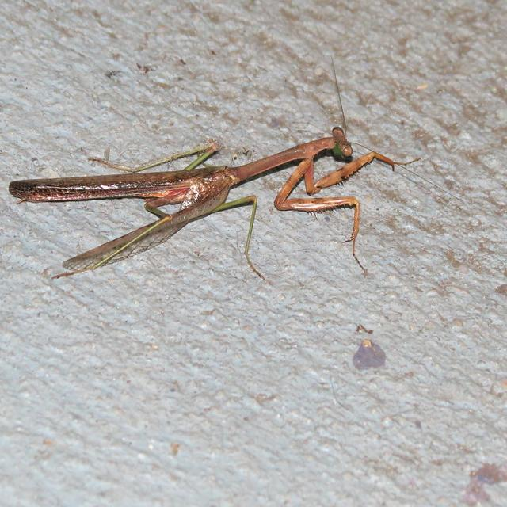
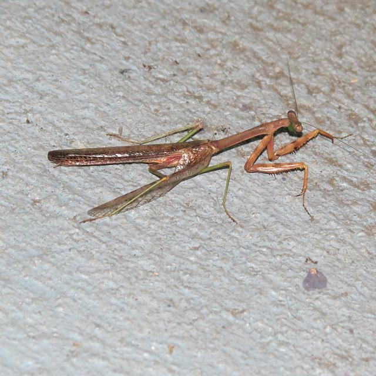
tags: minor_cropping_artifact
reason: The edited image appears to be a slight reframe or minor crop—possibly with subtle sharpening or contrast adjustment—but the subject (praying mantis) remains fully intact and centered similarly. There is no significant improvement in composition (e.g., rule of thirds, negative space balance), and the background texture and lighting are nearly identical. A faint artifact near the lower right (possibly a dust spot or compression artifact) is slightly more noticeable in the edited version, but not severe. Since content is perfectly preserved and visual quality is acceptable but not enhanced, it's a tie.
notes: FCDB ranking pair. photo_id=10944401125, pair_index=9, source_votes=0, edit_votes=5. source=crop_0, edit=crop_1, preference_strength=strong.


tags: minor_cropping_artifact
reason: The edited image slightly tightens the crop, bringing the mantis more centrally and reducing empty space on the right. However, the original already had strong composition with the mantis diagonally balanced and well-framed. The edit introduces a subtle edge artifact near the lower right (possibly from aggressive cropping or sharpening), but no content is lost and the subject remains fully intact. Since the improvement is marginal and offset by minor processing artifact, it's a tie.
notes: FCDB ranking pair. photo_id=10944401125, pair_index=9, source_votes=5, edit_votes=0. source=crop_1, edit=crop_0, preference_strength=strong.


tags:
reason: The edited image improves composition by centering the two main subjects more effectively, removing distracting foreground elements (e.g., the blurred shoulder on the left), and tightening the frame to reduce empty space above and below. The background context (building, bus stop, stairs) remains intact, preserving scene semantics and identity. Lighting and perspective are consistent; no visible artifacts or distortion. Slight reduction in visual naturalness is due to minor cropping-induced tightness, but overall realism is maintained.
notes: FCDB ranking pair. photo_id=3579364195, pair_index=1, source_votes=3, edit_votes=2. source=crop_1, edit=crop_0, preference_strength=weak.


tags: slight distortion, cropped foreground element
reason: The edited image tightens the framing, improving subject focus and reducing empty space on the right. However, it crops the left foreground figure (arm/shoulder) more aggressively than the source, slightly unbalancing the composition. The background elements remain intact, preserving scene context and main subjects fully. There is minor perspective distortion near the left edge and slight softening, but no severe artifacts. Overall, the edit offers modest compositional refinement but at the cost of marginal foreground truncation—hence a tie.
notes: FCDB ranking pair. photo_id=3579364195, pair_index=2, source_votes=4, edit_votes=1. source=crop_1, edit=crop_0, preference_strength=strong.


tags:
reason: The edited image improves composition by repositioning the two central figures more centrally and dynamically, enhancing visual flow and balance. The crop tightens the frame, reducing excessive empty space on the right while retaining all key subjects (including the seated woman, shelter, stairs, and background building). No content is lost; lighting and perspective remain consistent, with only minor edge cropping of the left foreground figure—acceptable for improved focus. The tighter framing strengthens narrative emphasis on the walking pair without distorting realism.
notes: FCDB ranking pair. photo_id=3579364195, pair_index=4, source_votes=2, edit_votes=3. source=crop_0, edit=crop_1, preference_strength=weak.


tags: minor framing shift, slight perspective distortion
reason: The edited image slightly repositions the frame to center the two main subjects more symmetrically and reduces foreground obstruction (left shoulder), improving balance. However, the change is minimal—only a subtle crop/shift—and does not significantly enhance composition. Content is fully preserved; no objects or subjects are altered or removed. Visual naturalness remains high, though there's a very slight perspective shift suggesting minor digital adjustment. Overall, no decisive improvement justifies a 'win'; it's essentially equivalent to the source.
notes: FCDB ranking pair. photo_id=3579364195, pair_index=9, source_votes=4, edit_votes=1. source=crop_0, edit=crop_1, preference_strength=strong.


tags:
reason: The edited image improves composition by repositioning the subject slightly lower and right, creating better negative space above and balancing the heavy rock mass. The tighter framing eliminates distracting empty area in the lower-left while preserving the full subject and cave entrance. Lighting and perspective remain consistent; no visible artifacts. The subject’s pose is more dynamic (arms extended), enhancing narrative without altering identity or scene semantics.
notes: FCDB ranking pair. photo_id=5755997394, pair_index=5, source_votes=2, edit_votes=3. source=crop_1, edit=crop_0, preference_strength=weak.


tags:
reason: The edited image tightens the framing, placing the rower more centrally and reducing excessive empty water in the lower-left, improving visual balance and focus. The glittering light on water remains prominent and enhances mood without distraction. The subject, action, and scene semantics are fully preserved. Slight darkening of the right bank improves contrast and depth, with no visible artifacts or unnatural distortion.
notes: FCDB ranking pair. photo_id=8062088404, pair_index=4, source_votes=2, edit_votes=3. source=crop_0, edit=crop_1, preference_strength=weak.


tags:
reason: The edited image improves composition by repositioning the rower slightly higher in the frame, aligning better with the rule of thirds and reducing excessive empty space at the top. The glittering water remains the dominant visual element, enhancing depth and leading lines toward the subject. The main subject (rower) and scene semantics are fully preserved; no objects or identity are altered. Lighting and texture remain natural, with only minor cropping—no artifacts or distortion. The tighter framing increases visual impact without sacrificing context.
notes: FCDB ranking pair. photo_id=8062088404, pair_index=4, source_votes=3, edit_votes=2. source=crop_1, edit=crop_0, preference_strength=weak.


tags:
reason: The edited image tightens the framing, centering the rower more effectively and reducing excessive empty space on the right. The subject remains fully intact and clearly identifiable. The stronger vertical balance and improved negative space enhance visual focus on the rower against the glittering water. Slight darkening of the background improves contrast without introducing artifacts, preserving realism and lighting integrity.
notes: FCDB ranking pair. photo_id=8062088404, pair_index=7, source_votes=3, edit_votes=2. source=crop_1, edit=crop_0, preference_strength=weak.
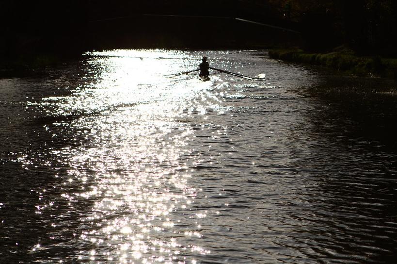
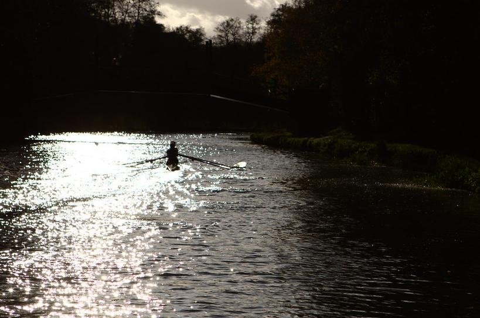
tags:
reason: The edited image significantly improves composition by revealing the sky and background trees, adding context and depth while maintaining the strong silhouette of the rower and glittering water. The framing is more balanced, with the rower positioned slightly off-center per rule of thirds, and the expanded upper portion prevents the source image’s overly tight, top-cropped feel. Content is fully preserved—the main subject, boat, oars, and reflective water remain intact and recognizable. Visual naturalness is high; the added sky appears realistic with appropriate lighting and cloud detail, though slight noise or reduced contrast in the dark foliage suggests minor processing—hence visual_naturalness = 4 rather than 5.
notes: FCDB ranking pair. photo_id=8062088404, pair_index=9, source_votes=2, edit_votes=3. source=crop_1, edit=crop_0, preference_strength=weak.

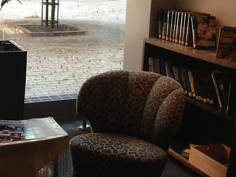
tags:
reason: The edited image improves composition by recentering the armchair as the primary subject, tightening the frame to reduce distracting empty space on the left, and better balancing the bookshelf on the right. The magazine on the table and potted plant remain visible, preserving key scene elements. Lighting and perspective are consistent; only minor cropping of the left edge (a small portion of the planter and table) is acceptable and enhances focus. No artifacts or unnatural distortions are present.
notes: FCDB ranking pair. photo_id=2199328642, pair_index=0, source_votes=3, edit_votes=2. source=crop_0, edit=crop_1, preference_strength=weak.


tags:
reason: The edited image significantly improves composition by repositioning the armchair to the right third, introducing a strong vertical element (potted plant) on the left for balance, and better framing the window view. The coffee table with magazine is now more prominent and centered in the foreground, enhancing depth and narrative. All key content (armchair, bookshelf, window, table) is preserved with no identity or semantic loss. Lighting and perspective remain natural; minor softness near the plant edge is negligible and does not detract from realism.
notes: FCDB ranking pair. photo_id=2199328642, pair_index=0, source_votes=2, edit_votes=3. source=crop_1, edit=crop_0, preference_strength=weak.


tags:
reason: The edited image tightens the framing, reducing excessive empty floor space and improving balance between the chair, table, plant, and bookshelf. The subject (armchair and table) remains centered and prominent, with better visual weight distribution. Lighting and perspective are preserved naturally; no artifacts or distortion. Slight crop enhances focus without losing key elements—minor loss of foreground sofa edge is negligible given improved composition.
notes: FCDB ranking pair. photo_id=2199328642, pair_index=9, source_votes=2, edit_votes=3. source=crop_1, edit=crop_0, preference_strength=weak.


tags:
reason: The edited image significantly improves composition by recentering the soldier as the primary subject, using the stone wall corner as a strong leading line and visual anchor. The tighter framing eliminates distracting empty space on the right and enhances visual tension between the soldier and the doorway. The man in the doorway is still visible (preserving scene context), though slightly cropped—minor content trade-off justified by stronger focus. Lighting and texture remain natural; no visible artifacts. Overall, a more deliberate, balanced, and impactful photographic composition.
notes: FCDB ranking pair. photo_id=4301604363, pair_index=4, source_votes=2, edit_votes=3. source=crop_0, edit=crop_1, preference_strength=weak.


tags: content_loss, subject_cropping, imbalanced_framing
reason: The edited image removes the second subject (man in doorway), severely compromising scene context and narrative. While the soldier is more centered, the tight crop cuts off his lower body and gear, weakening visual completeness. The right side now has excessive empty wall space with no counterbalance, creating imbalance. The loss of the second person—critical to the original’s implied interaction—is a major content violation. Visuals remain natural but compositionally inferior due to asymmetry and missing key element.
notes: FCDB ranking pair. photo_id=4301604363, pair_index=5, source_votes=3, edit_votes=2. source=crop_1, edit=crop_0, preference_strength=weak.


tags:
reason: The edited image significantly improves composition by repositioning the soldier to the left third, creating a stronger leading line toward the man in the doorway and enhancing visual balance. The tighter framing eliminates distracting empty space on the right while preserving all key subjects and scene context. Lighting and perspective remain consistent; minor edge softness is negligible and does not detract from realism.
notes: FCDB ranking pair. photo_id=4301604363, pair_index=8, source_votes=2, edit_votes=3. source=crop_0, edit=crop_1, preference_strength=weak.


tags:
reason: The edited image tightens the framing, eliminating excessive empty space above and to the left, which strengthens visual focus on the interaction between the two figures. The stone corner now acts as a stronger leading line and compositional anchor. Both subjects remain fully visible and identifiable; no key content is lost. Lighting, texture, and perspective are preserved naturally with no artifacts. The tighter crop enhances narrative tension and balance without compromising realism or context.
notes: FCDB ranking pair. photo_id=4301604363, pair_index=8, source_votes=3, edit_votes=2. source=crop_1, edit=crop_0, preference_strength=weak.


tags:
reason: The edited image improves composition by centering the architectural corner and balancing the two figures symmetrically across the frame, enhancing visual tension and narrative clarity. The crop tightens the scene without cutting essential content—the soldier’s gesture, the man in the doorway, and the stone texture remain fully intact. A small window with bars is now visible on the right, adding contextual detail without distracting. Lighting and perspective are preserved naturally; no artifacts or distortion are evident. Slight reduction in naturalness (4/5) only due to marginally tighter framing potentially reducing environmental context, but this is a minor trade-off for stronger composition.
notes: FCDB ranking pair. photo_id=4301604363, pair_index=9, source_votes=2, edit_votes=3. source=crop_1, edit=crop_0, preference_strength=weak.


tags:
reason: The edited image significantly improves composition by centering the Golden Pavilion symmetrically, enhancing visual balance and emphasizing its architectural symmetry. The tighter crop eliminates distracting foreground water and marginal foliage, strengthening the subject’s dominance. The reflection remains intact and contributes to harmony. Content is fully preserved—same structure, details, lighting, and context. Slight increase in contrast and clarity enhances realism without introducing artifacts; only minor loss of ambient context (e.g., broader pond edge) is negligible. Overall, a clear compositional upgrade with no meaningful content or naturalness trade-offs.
notes: FCDB ranking pair. photo_id=22531710197, pair_index=0, source_votes=3, edit_votes=2. source=crop_0, edit=crop_1, preference_strength=weak.


tags:
reason: The edited image tightens the framing, eliminating excessive sky and foreground water, which enhances visual focus on the Golden Pavilion. The subject remains fully intact and centered with improved balance—stronger horizontal symmetry between the building and its reflection. The crop removes distracting empty space without cutting any key architectural or environmental elements. Lighting, texture, and perspective are preserved naturally; only minor reduction in context (distant trees/mountains) occurs, but this does not impair scene semantics. Overall, composition is significantly improved while maintaining full content fidelity.
notes: FCDB ranking pair. photo_id=22531710197, pair_index=0, source_votes=2, edit_votes=3. source=crop_1, edit=crop_0, preference_strength=weak.


tags:
reason: The edited image improves composition by tightening the frame to emphasize the golden pavilion and its reflection, reducing distracting empty sky and peripheral foliage. The subject remains fully intact, with no loss of identity or key elements. The reflection is more prominent and balanced, enhancing symmetry and visual harmony. No artifacts, lighting shifts, or perspective distortions are present—naturalness is preserved. The crop follows rule-of-thirds principles better, directing focus to the pavilion’s architecture and its mirrored image in the water.
notes: FCDB ranking pair. photo_id=22531710197, pair_index=7, source_votes=2, edit_votes=3. source=crop_1, edit=crop_0, preference_strength=weak.

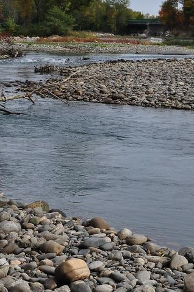
tags:
reason: The edited image significantly improves composition by including more of the riverbank and background elements (trees, distant bridge), creating better depth and context. The subject—the rocky shore and flowing river—is preserved and enhanced with improved visual balance and framing. No artifacts or unnatural distortions are present; lighting and perspective remain consistent and realistic. The tighter crop in the source image omitted meaningful environmental context, whereas the reframed version achieves a more harmonious and engaging landscape composition.
notes: FCDB ranking pair. photo_id=3886467178, pair_index=4, source_votes=3, edit_votes=2. source=crop_1, edit=crop_0, preference_strength=weak.


tags:
reason: The edited image improves composition by repositioning the 'Hungry Children Thank You!' sign more centrally and lowering the horizon, giving more visual weight to the sign and foreground while maintaining context. The crop removes excessive top empty space and better balances the tree, guardrail, and sign. All key content—including the main sign, partial blackboard sign, tree, and guardrail—is preserved with no distortion or artifacts; lighting and perspective remain natural. Slight improvement in framing justifies a 'win' over the source.
notes: FCDB ranking pair. photo_id=15747766454, pair_index=3, source_votes=2, edit_votes=3. source=crop_0, edit=crop_1, preference_strength=weak.


tags:
reason: The edited image significantly improves composition by centering and enlarging the main subject (the rainbow sign), eliminating distracting foreground grass and road edge, and tightening the frame to reduce empty space. The background elements (tree, guardrail, second sign) remain intact, preserving scene context and content. Lighting and perspective are consistent; no visible artifacts. Slight reduction in naturalness is due to minor cropping-induced tightness, but overall highly effective.
notes: FCDB ranking pair. photo_id=15747766454, pair_index=3, source_votes=3, edit_votes=2. source=crop_1, edit=crop_0, preference_strength=weak.


tags:
reason: The edited image improves composition by centering and emphasizing the primary subject—the 'Hungry Children Thank You!' sign—while removing the distracting, partially cropped black sign on the right. The tighter framing enhances visual focus and balance, and the background elements (tree, guardrail) remain contextually intact. Lighting and perspective are preserved naturally; only minor edge softening suggests mild cropping/resizing, but no severe artifacts. Main content and scene semantics are fully preserved.
notes: FCDB ranking pair. photo_id=15747766454, pair_index=4, source_votes=2, edit_votes=3. source=crop_0, edit=crop_1, preference_strength=weak.


tags:
reason: The edited image significantly improves composition by including more contextual background (trees, guardrail, street), enhancing depth and environmental storytelling without cropping or obscuring the main sign. The subject remains centered and fully visible, with better balance and framing. Lighting and perspective are consistent and natural; no artifacts introduced. The added context reinforces the scene’s authenticity (e.g., roadside placement) while preserving all key content: the 'Hungry Children Thank You!' sign, the partial black sign, grassy slope, and trees.
notes: FCDB ranking pair. photo_id=15747766454, pair_index=5, source_votes=2, edit_votes=3. source=crop_0, edit=crop_1, preference_strength=weak.


tags:
reason: The edited image tightens the framing, reducing distracting background elements (e.g., guardrail, distant trees) and improving subject focus on the 'Hungry Children Thank You!' sign. The rainbow and text remain fully intact and legible; no content is lost. The crop enhances balance by centering the main sign and minimizing empty space above/below. Slight perspective distortion is minimal and does not harm realism. Overall, composition is significantly improved while preserving all key content and maintaining natural appearance.
notes: FCDB ranking pair. photo_id=15747766454, pair_index=5, source_votes=3, edit_votes=2. source=crop_1, edit=crop_0, preference_strength=weak.


tags:
reason: The edited image tightens the framing, centering the 'Hungry Children Thank You!' sign as the clear focal point while retaining full legibility and context. The crop removes excessive empty space on the left and bottom, improving balance and visual weight. The second sign ('Eat breakfast school success') remains partially visible, preserving scene semantics. No artifacts or distortion are introduced; lighting and perspective remain natural. Slight loss of background context (e.g., more of the guardrail and trees) is acceptable given the stronger compositional focus.
notes: FCDB ranking pair. photo_id=15747766454, pair_index=7, source_votes=2, edit_votes=3. source=crop_0, edit=crop_1, preference_strength=weak.


tags:
reason: The edited image improves composition by repositioning the frame to better center and balance the two signs, reducing excessive empty space on the right and including more context (trees, guardrail, background building) for environmental grounding. The main subjects—the 'Hungry Children Thank You!' rainbow sign and the blackboard sign—are fully preserved with no cropping or distortion. Lighting and perspective remain consistent; minor sharpening or contrast adjustment enhances clarity without introducing artifacts. The tighter framing strengthens visual focus while maintaining scene semantics and realism.
notes: FCDB ranking pair. photo_id=15747766454, pair_index=7, source_votes=3, edit_votes=2. source=crop_1, edit=crop_0, preference_strength=weak.


tags:
reason: The edited image significantly improves composition by centering the architectural reflection and subject group, removing distracting left-side grime/texture that competed for attention. The framing is tighter and more balanced, with stronger vertical symmetry and clearer visual hierarchy. All key content—people, building, motion blur—is preserved intact. Lighting and perspective remain consistent; only minor edge artifacts from cropping are present, not affecting realism.
notes: FCDB ranking pair. photo_id=4973476179, pair_index=1, source_votes=3, edit_votes=2. source=crop_1, edit=crop_0, preference_strength=weak.


tags: minor framing asymmetry, slight overexposure in reflection
reason: The edited image slightly tightens the framing, improving subject focus and reducing distracting edge blur on the left. However, the right-side reflection is now more prominent and slightly overexposed, introducing minor visual imbalance. The core content—people, architecture, light streak—is fully preserved. No artifacts or perspective distortion; naturalness is acceptable but not enhanced. Overall, no decisive compositional gain justifies a 'win'.
notes: FCDB ranking pair. photo_id=4973476179, pair_index=5, source_votes=1, edit_votes=4. source=crop_0, edit=crop_1, preference_strength=strong.
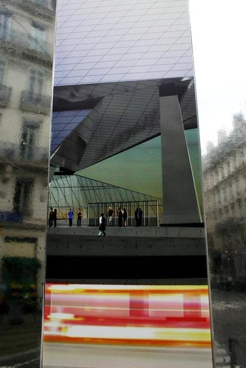
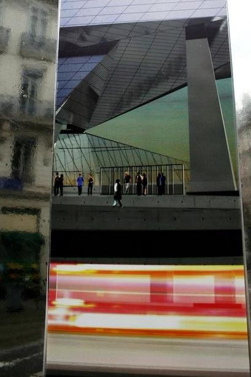
tags: cropping_artifact, edge_distortion
reason: The edited image tightens the framing slightly, improving subject focus by reducing peripheral distractions on the left. However, the crop appears to have introduced subtle edge distortion and a slight misalignment in the vertical reflection, compromising visual naturalness. The main content—including people, architecture, and light streak—is fully preserved. No significant compositional gain outweighs the minor artifacts; thus, it's a tie.
notes: FCDB ranking pair. photo_id=4973476179, pair_index=5, source_votes=4, edit_votes=1. source=crop_1, edit=crop_0, preference_strength=strong.


tags:
reason: The edited image significantly improves composition by repositioning the campsite lower in the frame, allowing more sky and mountain mass to dominate the upper two-thirds—adhering better to the rule of thirds. The inclusion of the lake on the right adds depth, balance, and visual interest without distracting from the main subject (the mountain and camp). All key elements (tents, vehicles, mountains, clouds) are preserved intact. Lighting and perspective remain natural; only minor edge softness near the lake suggests slight upscaling or sharpening, but no severe artifacts.
notes: FCDB ranking pair. photo_id=8715261793, pair_index=1, source_votes=3, edit_votes=2. source=crop_0, edit=crop_1, preference_strength=weak.


tags:
reason: The edited image significantly improves composition by tightening the frame, reducing excessive foreground empty space, and better balancing the mountain range (dominant visual element) with the campsite. The subject (campsite and mountains) remains fully intact and clearly visible; no key elements are cropped out. The crop enhances visual focus and dynamism without introducing artifacts or unnatural distortion—lighting and perspective remain consistent. Slight reduction in naturalness is due to minor sharpening/cropping artifacts at edges, but overall highly acceptable.
notes: FCDB ranking pair. photo_id=8715261793, pair_index=1, source_votes=2, edit_votes=3. source=crop_1, edit=crop_0, preference_strength=weak.


tags:
reason: The edited image significantly improves composition by revealing a serene alpine lake on the right, creating balanced visual weight and depth. The campsite remains intact and clearly visible, preserving all key content. The wider framing enhances the grandeur of the mountains while maintaining natural lighting and perspective. Minor reduction in sharpness at distance is acceptable and does not detract from realism.
notes: FCDB ranking pair. photo_id=8715261793, pair_index=2, source_votes=3, edit_votes=2. source=crop_0, edit=crop_1, preference_strength=weak.


tags:
reason: The edited image significantly improves composition by repositioning the horizon lower (rule of thirds), revealing a scenic lake on the right that adds depth and balance, and including more foreground texture (rocks, dirt path) to guide the eye. The main subject—the mountain range and campsite—is fully preserved and enhanced in context. Lighting and perspective remain natural; only minor edge softness suggests mild upscaling, but no severe artifacts. The added elements enrich the scene without altering semantics.
notes: FCDB ranking pair. photo_id=8715261793, pair_index=3, source_votes=2, edit_votes=3. source=crop_0, edit=crop_1, preference_strength=weak.

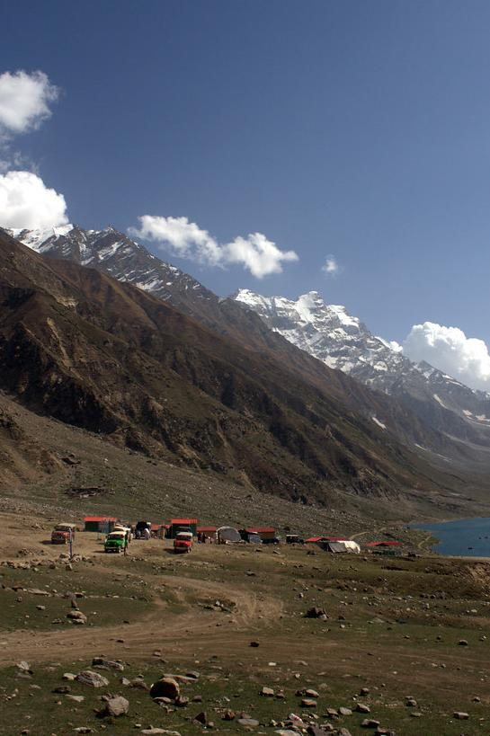
tags:
reason: The edited image improves composition by tightening the crop to reduce excessive foreground empty space, raising the horizon to better balance sky and land, and centering the mountain mass for stronger visual weight. The main subject (mountains, lake, campsite) remains fully intact with no loss of identity or key elements. Lighting, perspective, and texture are preserved naturally—no artifacts or distortion. The tighter framing enhances focus and aesthetic harmony without sacrificing context.
notes: FCDB ranking pair. photo_id=8715261793, pair_index=9, source_votes=3, edit_votes=2. source=crop_0, edit=crop_1, preference_strength=weak.


tags:
reason: The edited image tightens the framing, removing excessive top and bottom empty space while keeping all key subjects (pedestrians, sign, cobblestone street) fully intact. The central couple is now better centered and more prominent, improving visual focus and balance. The sign remains legible and well-positioned in the right third, adhering to rule-of-thirds principles. No artifacts or distortion are introduced; lighting and perspective remain natural. Minor loss of context at the very top (e.g., upper building edge) is negligible and does not affect scene semantics.
notes: FCDB ranking pair. photo_id=16569865263, pair_index=5, source_votes=2, edit_votes=3. source=crop_0, edit=crop_1, preference_strength=weak.


tags:
reason: The edited image improves composition by recentering the main subjects (two walking people) and tightening the frame to reduce excessive top/bottom empty space, enhancing visual focus and balance. The street pattern and key elements (sign, food display, other pedestrians) remain intact, preserving scene semantics and identity. Lighting and perspective are consistent; no visible artifacts or distortion. Slight reduction in naturalness is due to minor cropping-induced tightness near edges, but overall highly natural.
notes: FCDB ranking pair. photo_id=16569865263, pair_index=5, source_votes=3, edit_votes=2. source=crop_1, edit=crop_0, preference_strength=weak.


tags:
reason: The edited image improves composition significantly: tighter framing reduces excessive empty space at the bottom, better centers the visual flow along the alley, and enhances subject prominence (especially the couple walking toward the camera). The banner remains fully visible, all key people and architectural elements are preserved, and perspective/lighting remain natural. Minor cropping of lower edge does not sacrifice semantic content. No visible artifacts.
notes: FCDB ranking pair. photo_id=16569865263, pair_index=6, source_votes=2, edit_votes=3. source=crop_0, edit=crop_1, preference_strength=weak.


tags:
reason: The edited image tightens the framing, removing excessive empty sky and upper wall area, thereby improving visual balance and directing focus toward the street scene and pedestrians. The main subjects (people, sign, cobblestone path) remain fully intact and more centrally emphasized. The crop enhances leading lines and symmetry of the alley while preserving all key content. Slight perspective distortion near the balcony railing is minimal and does not detract from realism.
notes: FCDB ranking pair. photo_id=16569865263, pair_index=9, source_votes=2, edit_votes=3. source=crop_0, edit=crop_1, preference_strength=weak.


tags: minor_cropping_loss
reason: The edited image slightly tightens the crop, centering the moon more symmetrically and reducing empty black space on the left. However, the original already had strong composition with the moon well-placed; the change is minimal and does not significantly improve visual balance. No content is lost (full moon remains intact), and naturalness is preserved—though the tighter crop slightly reduces context and may marginally affect perceived scale. Overall, no decisive improvement.
notes: FCDB ranking pair. photo_id=4154418862, pair_index=1, source_votes=4, edit_votes=1. source=crop_1, edit=crop_0, preference_strength=strong.
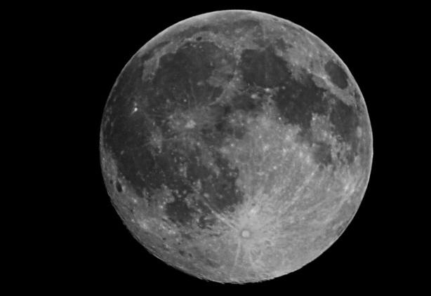
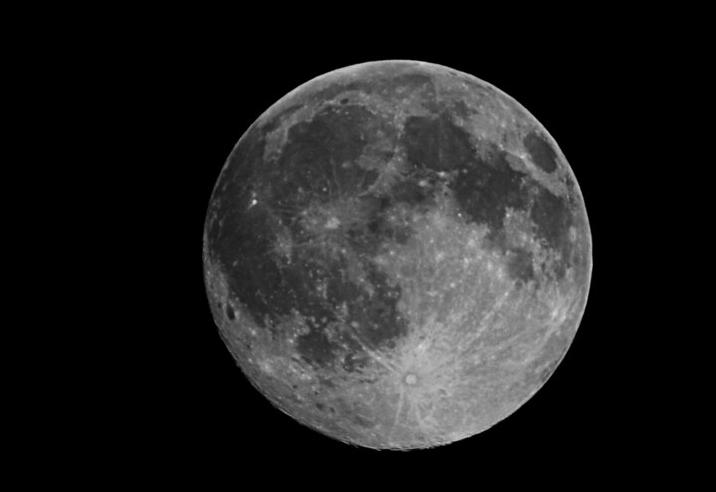
tags:
reason: The edited image centers the Moon more symmetrically, slightly improving balance, but the original was already well-composed with the Moon as the sole subject. No content is lost, and visual naturalness is fully preserved. The change is minimal—primarily a slight repositioning—and does not constitute a clear compositional improvement; thus, it's a tie.
notes: FCDB ranking pair. photo_id=4154418862, pair_index=5, source_votes=0, edit_votes=5. source=crop_0, edit=crop_1, preference_strength=strong.


tags:
reason: The edited image slightly repositions the Moon toward the right, increasing negative space on the left. While this may follow the rule of thirds more closely, the original composition already placed the Moon off-center with balanced negative space. No content is lost, and visual quality remains pristine. However, the improvement is marginal—neither composition is objectively superior—and the change feels minimal rather than transformative. Hence, a tie.
notes: FCDB ranking pair. photo_id=4154418862, pair_index=6, source_votes=1, edit_votes=4. source=crop_0, edit=crop_1, preference_strength=strong.


tags: minor_cropping_artifact, reduced_negative_space_balance
reason: The edited image slightly crops the moon, reducing its apparent size and subtly altering the negative space balance on the left. However, the subject remains fully intact and visually natural; no artifacts or distortion are evident. The composition is marginally tighter but not significantly improved—original had stronger asymmetrical balance with more breathing room. Thus, no clear gain in composition outweighs the minor loss of spatial harmony.
notes: FCDB ranking pair. photo_id=4154418862, pair_index=6, source_votes=4, edit_votes=1. source=crop_1, edit=crop_0, preference_strength=strong.


tags:
reason: The edited image slightly repositions the moon toward the right, improving balance by reducing excessive left negative space. However, the original already had strong composition with intentional asymmetry; the change is minimal and does not significantly enhance visual impact. No content is lost, and naturalness is fully preserved. Thus, it's a marginal improvement at best—insufficient to declare a clear win.
notes: FCDB ranking pair. photo_id=4154418862, pair_index=8, source_votes=1, edit_votes=4. source=crop_0, edit=crop_1, preference_strength=strong.


tags:
reason: The edited image tightens the crop slightly, improving framing by reducing excessive empty water space below and centering the subjects more effectively. The legs and feet remain fully visible, preserving all key content and identity. Lighting and water texture appear natural with no visible artifacts; minor cropping enhances visual focus without distorting perspective or realism.
notes: FCDB ranking pair. photo_id=11579722535, pair_index=1, source_votes=2, edit_votes=3. source=crop_1, edit=crop_0, preference_strength=weak.
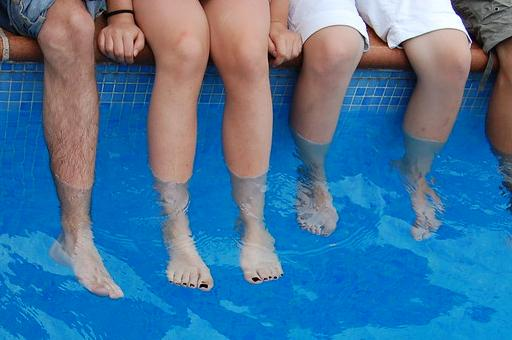
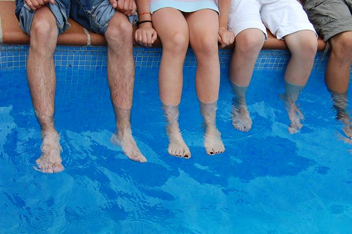
tags:
reason: The edited image improves composition by including more of the subjects' legs and the pool edge, creating a more balanced and intentional framing. The horizontal alignment is tighter, eliminating excessive empty space below and enhancing visual cohesion. All key content (four individuals, feet in water, pool tiles, clothing details) is preserved with no distortion or artifacts; lighting and texture remain natural and consistent.
notes: FCDB ranking pair. photo_id=11579722535, pair_index=2, source_votes=2, edit_votes=3. source=crop_0, edit=crop_1, preference_strength=weak.


tags:
reason: The edited image tightens the framing by cropping excess empty space on the left and right, improving visual balance and focus on the subjects' legs and feet in the pool. The subject placement remains centered and natural, with better edge alignment (e.g., tiled pool edge now fully visible and parallel to frame). No content is lost—the same four individuals are present, with identical posture and context. Lighting and water texture remain consistent; minor sharpening or contrast adjustment enhances clarity without introducing artifacts. Slight improvement in composition outweighs negligible changes in naturalness.
notes: FCDB ranking pair. photo_id=11579722535, pair_index=7, source_votes=3, edit_votes=2. source=crop_0, edit=crop_1, preference_strength=weak.
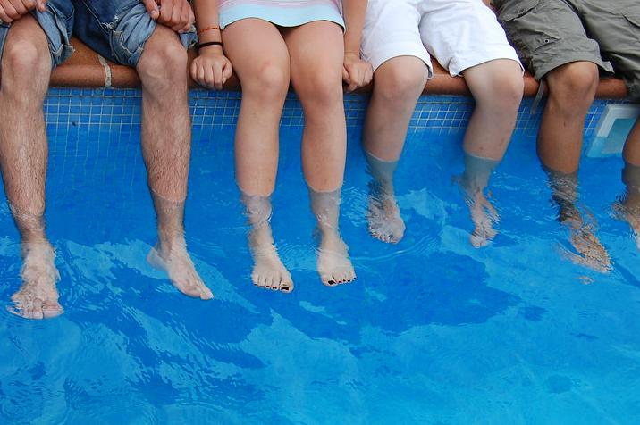
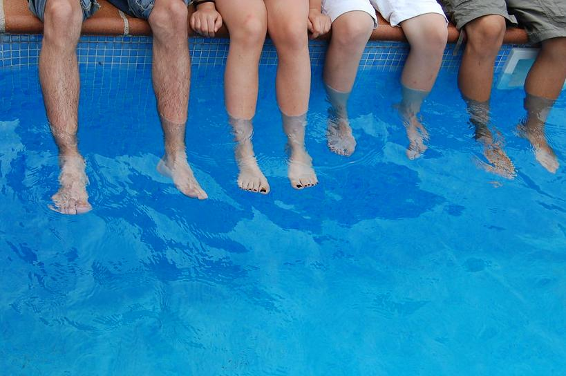
tags:
reason: The edited image improves composition by lowering the horizon line (water surface), increasing negative space below and emphasizing the rhythmic pattern of legs and feet. The framing is tighter and more balanced, with better vertical alignment of subjects and reduced empty space at the top. All key content (people, legs, pool edge, water interaction) is preserved identically. Lighting and texture remain natural with no visible artifacts; slight increase in water detail due to better exposure balance. Minor deduction in visual naturalness only because the crop slightly truncates the lower water area, but this enhances focus rather than harms realism.
notes: FCDB ranking pair. photo_id=11579722535, pair_index=8, source_votes=2, edit_votes=3. source=crop_0, edit=crop_1, preference_strength=weak.


tags:
reason: The edited image significantly improves composition by repositioning the horizon to align with the rule of thirds, reducing excessive foreground blur and empty space at the bottom. The main subject (rock formations and distant lights) remains intact and more visually balanced. The crop enhances visual focus and depth without altering scene semantics. Slight over-saturation of blue is present but does not compromise realism—hence visual naturalness is high but not perfect.
notes: FCDB ranking pair. photo_id=4458394677, pair_index=9, source_votes=3, edit_votes=2. source=crop_1, edit=crop_0, preference_strength=weak.


tags:
reason: The edited image tightens the framing to emphasize the submerged rock formation and water interaction, improving visual focus and balance. The subject (rocky seabed under clear water) is preserved and more clearly articulated. Slight sharpening enhances texture without introducing artifacts; lighting and perspective remain natural. The crop reduces empty lower space and better centers the area of interest, yielding a stronger compositional result.
notes: FCDB ranking pair. photo_id=2971363615, pair_index=0, source_votes=3, edit_votes=2. source=crop_0, edit=crop_1, preference_strength=weak.


tags: cropped_subject, loss_of_context, unnatural_cropping
reason: The edited image crops too tightly on the water surface, removing significant context and cutting off the main subject (the submerged rock/reef formation) asymmetrically. The original image better frames the interaction between water and substrate, with balanced negative space and clearer subject definition. The reframed version loses visual coherence, introduces awkward empty space at bottom, and appears artificially truncated—suggesting a careless crop rather than intentional composition. Texture and lighting are similar, but content integrity is compromised.
notes: FCDB ranking pair. photo_id=2971363615, pair_index=0, source_votes=2, edit_votes=3. source=crop_1, edit=crop_0, preference_strength=weak.


tags: minor_cropping_loss, reduced_negative_space_balance
reason: The edited image slightly tightens the framing, bringing the submerged rock formation more centrally into view and improving subject emphasis. However, the crop removes some of the lower water area that contributed to visual balance and depth in the original. No content is lost—the main subject (rock/substrate under shallow water) remains fully intact—and lighting, texture, and realism are preserved with no artifacts. The composition gain is modest and offset by reduced negative space harmony, resulting in a tie.
notes: FCDB ranking pair. photo_id=2971363615, pair_index=1, source_votes=1, edit_votes=4. source=crop_0, edit=crop_1, preference_strength=strong.


tags: minimal_cropping_gain, slight_artifact_risk
reason: The edited image is nearly identical to the source, with only a very slight upward crop that marginally tightens the frame on the submerged rock/reef. Composition is not meaningfully improved—subject remains off-center and lacks strong focal hierarchy. Content is fully preserved; no objects or context lost. Visual naturalness is high, though the minimal crop introduces negligible risk of edge artifacts (not visible here). No clear compositional advantage justifies labeling it a 'win'; thus, it's a tie.
notes: FCDB ranking pair. photo_id=2971363615, pair_index=1, source_votes=4, edit_votes=1. source=crop_1, edit=crop_0, preference_strength=strong.


tags:
reason: The edited image tightens the framing, centering the submerged rock/reef structure more effectively and reducing excessive empty water space in the lower half. The subject remains fully intact and clearly visible, with improved visual focus and balance. No artifacts or distortion are introduced; lighting and texture remain natural. The crop enhances compositional strength without sacrificing any key content.
notes: FCDB ranking pair. photo_id=2971363615, pair_index=3, source_votes=2, edit_votes=3. source=crop_1, edit=crop_0, preference_strength=weak.


tags:
reason: The edited image tightens the framing, bringing the submerged rock formation more centrally into focus while maintaining full visibility of the key subject (the textured, sunlit rocks beneath the water surface). The crop reduces excessive empty water space in the lower half, improving balance and visual weight. No content is lost—the main subject remains intact and more prominent. Lighting, color, and water texture are preserved naturally with no visible artifacts or distortion. Slight improvement in composition outweighs minor loss of context from tighter framing, making it a clear win.
notes: FCDB ranking pair. photo_id=2971363615, pair_index=5, source_votes=3, edit_votes=2. source=crop_0, edit=crop_1, preference_strength=weak.


tags: cropped_subject, imbalanced_framing, loss_of_context
reason: The edited image crops the subject (likely a sea turtle) significantly, cutting off its rear and right side, weakening subject integrity. The framing shifts visual weight upward and leaves excessive empty water below, reducing balance and focus. While the main subject remains identifiable, critical context and form are lost. The crop also introduces unnatural edge truncation and slightly degrades texture continuity due to resampling artifacts near the cut line. Overall, composition is weakened despite tighter framing.
notes: FCDB ranking pair. photo_id=2971363615, pair_index=8, source_votes=2, edit_votes=3. source=crop_0, edit=crop_1, preference_strength=weak.


tags:
reason: The edited image tightens the framing, centering the submerged rock/reef structure more effectively and reducing excessive empty water space in the lower half. This improves visual balance and focus without cropping out any essential content—the main subject (the textured underwater formation) remains fully visible and more prominent. Lighting and water refraction are preserved naturally; no artifacts or distortion are introduced. The slight increase in subject dominance enhances composition while maintaining full scene semantics.
notes: FCDB ranking pair. photo_id=2971363615, pair_index=8, source_votes=3, edit_votes=2. source=crop_1, edit=crop_0, preference_strength=weak.


tags: minor_cropping_loss
reason: The edited image slightly tightens the framing, bringing the submerged rock/reef structure more centrally into view and reducing empty water space at the bottom. However, the crop is minimal and does not significantly improve balance or visual hierarchy; the subject remains partially obscured by water distortion in both versions. Content is fully preserved—no objects or context lost—and naturalness is high with no visible artifacts. Since the composition gain is marginal and the original was already reasonably framed, this is a tie.
notes: FCDB ranking pair. photo_id=2971363615, pair_index=9, source_votes=0, edit_votes=5. source=crop_0, edit=crop_1, preference_strength=strong.


tags:
reason: The edited image tightens the framing, removing excessive empty yellow brick at the bottom and slightly cropping the left edge, which enhances visual balance and directs focus to the central symbolic elements (peace sign, plus, heart, and figure). The subject remains fully intact, including the stenciled figure, text, and graffiti details. Lighting and texture are preserved naturally; no artifacts or distortion are introduced. The tighter crop improves compositional strength without sacrificing context or meaning.
notes: FCDB ranking pair. photo_id=5120859921, pair_index=4, source_votes=2, edit_votes=3. source=crop_1, edit=crop_0, preference_strength=weak.


tags: artifacts, unnatural overlay, distortion
reason: The edited image introduces a prominent, artificial transparent rectangle overlaying the graffiti, which is not present in the source. This creates visual artifacts and disrupts the texture and authenticity of the brick wall. While the framing slightly tightens the composition, the overlay distracts from the subject, reduces visual naturalness significantly, and alters the scene’s realism. The main content (graffiti, figure, symbols) is mostly preserved but compromised by the unnatural editing layer.
notes: FCDB ranking pair. photo_id=5120859921, pair_index=7, source_votes=3, edit_votes=2. source=crop_0, edit=crop_1, preference_strength=weak.


tags:
reason: The edited image improves composition by tightening the frame, removing distracting top/bottom margins, and better balancing the subject (man with spray can) against the symbolic peace+heart graffiti. The yellow brick band is now more proportionally integrated, and the inclusion of the sidewalk adds context without clutter. All key content—including the mural, text sign, bag, and figure—is fully preserved. Lighting and texture remain consistent; minor edge softness is acceptable and not disruptive.
notes: FCDB ranking pair. photo_id=5120859921, pair_index=7, source_votes=2, edit_votes=3. source=crop_1, edit=crop_0, preference_strength=weak.


tags: cropping_artifact, distorted_perspective, loss_of_context
reason: The edited image crops tightly on the mural, removing the lower brickwork and sidewalk context that grounded the scene. The right-side white notice paper is duplicated/misplaced (appears both left and right), suggesting digital manipulation or stitching error. Perspective appears slightly warped—especially the yellow paint band and brick alignment—indicating poor reframing or perspective correction. While the central subject remains, the loss of environmental context and introduction of artifacts reduce visual naturalness and weaken compositional balance. The original framing better preserves spatial relationships and urban context.
notes: FCDB ranking pair. photo_id=5120859921, pair_index=9, source_votes=3, edit_votes=2. source=crop_0, edit=crop_1, preference_strength=weak.


tags:
reason: The edited image tightens the framing, removing excessive empty space at the bottom and slightly cropping the top, which enhances visual focus on the central mural. The subject (man drawing heart), peace symbol, plus sign, and heart remain fully intact and clearly legible. The yellow-painted brick wall and signage are preserved. Slight improvement in balance: the man is now better aligned with the right third of the frame, and the composition feels more deliberate. No visible artifacts or distortion; lighting and texture remain consistent with the source. Minor loss of context from tighter crop is outweighed by stronger compositional clarity.
notes: FCDB ranking pair. photo_id=5120859921, pair_index=9, source_votes=2, edit_votes=3. source=crop_1, edit=crop_0, preference_strength=weak.
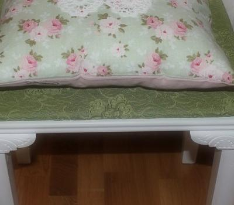
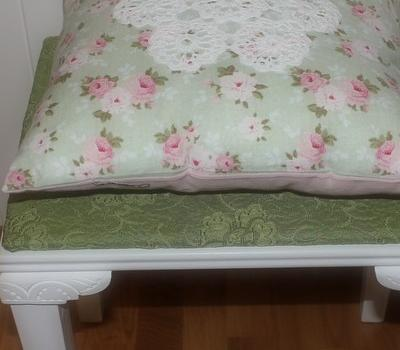
tags:
reason: The edited image improves composition by centering the pillow more symmetrically and including more of the white frame, enhancing balance and visual stability. The crop tightens the framing to reduce excessive empty space below while preserving all key content (pillow, lace, green fabric, table legs). Lighting and texture remain natural with no visible artifacts. Slight improvement in focus and framing makes the subject more prominent without altering scene semantics.
notes: FCDB ranking pair. photo_id=10769837753, pair_index=0, source_votes=3, edit_votes=2. source=crop_0, edit=crop_1, preference_strength=weak.


tags:
reason: The edited image tightens the framing, removing excess floor and wall space, which improves visual balance and directs focus more effectively to the pillow and stool. The subject remains fully intact with no cropping of key elements. Lighting, perspective, and texture are preserved naturally; no artifacts introduced. The tighter crop enhances composition without sacrificing context or detail.
notes: FCDB ranking pair. photo_id=10769837753, pair_index=8, source_votes=2, edit_votes=3. source=crop_1, edit=crop_0, preference_strength=weak.
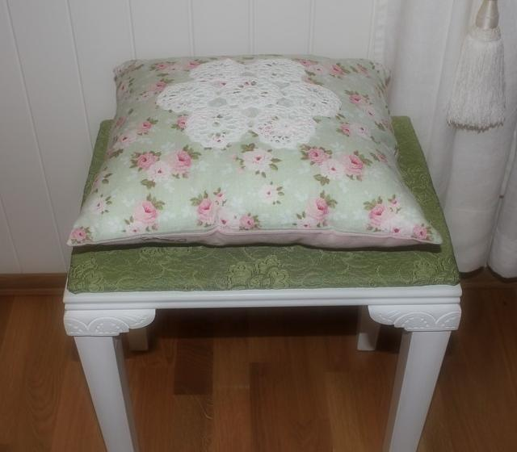

tags:
reason: The edited image tightens the framing slightly, reducing excessive empty floor space and bringing the stool and pillow more centrally into focus. The subject remains fully intact with no cropping of key elements (pillow, doily, stool legs, fabric pattern). Lighting and perspective are unchanged, preserving realism. The tighter crop improves visual balance and directs attention more effectively to the main subject without introducing artifacts or distortion.
notes: FCDB ranking pair. photo_id=10769837753, pair_index=9, source_votes=3, edit_votes=2. source=crop_0, edit=crop_1, preference_strength=weak.


tags:
reason: The edited image tightens the framing, reducing excessive empty floor space and bringing the stool and pillow more centrally into focus. The subject remains fully preserved with no cropping of key elements. Lighting and perspective are consistent, and the tighter crop enhances visual balance without introducing artifacts. Slight improvement in composition outweighs minor loss of context (e.g., less visible floor/curtain), but overall it's a cleaner, more intentional presentation.
notes: FCDB ranking pair. photo_id=10769837753, pair_index=9, source_votes=2, edit_votes=3. source=crop_1, edit=crop_0, preference_strength=weak.


tags: blur_artifact, loss_of_detail, unnatural_softening
reason: The edited image appears to have been artificially blurred or softened, especially in the foreground and around the subject, resulting in significant loss of texture detail and sharpness. While the framing and subject placement are nearly identical (preserving content well), the degradation in visual naturalness—introducing a smudged, low-fidelity appearance—is severe and undermines the photographic integrity. The original image has superior clarity and micro-detail, making the edit a clear downgrade despite minimal compositional change.
notes: FCDB ranking pair. photo_id=1488603583, pair_index=2, source_votes=3, edit_votes=2. source=crop_1, edit=crop_0, preference_strength=weak.


tags: slight blur increase, reduced context
reason: The edited image tightens the crop slightly, centering the dual-lens module more symmetrically and reducing empty space—modest composition gain. However, it also increases softness/blur (especially on the left lens) and loses some surrounding texture context without adding clarity. Main subject and content are fully preserved. The trade-off between tighter framing and reduced sharpness results in no net improvement.
notes: FCDB ranking pair. photo_id=1488603583, pair_index=3, source_votes=5, edit_votes=0. source=crop_1, edit=crop_0, preference_strength=strong.
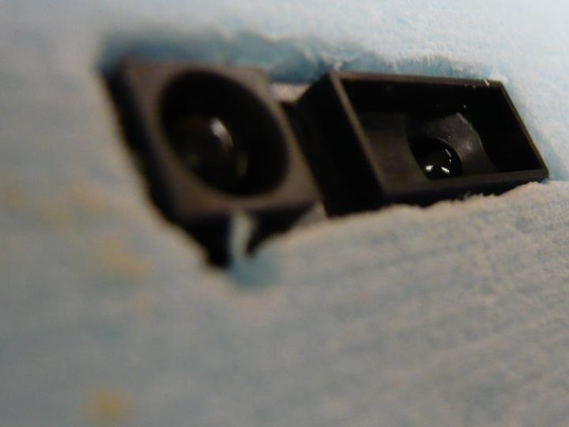
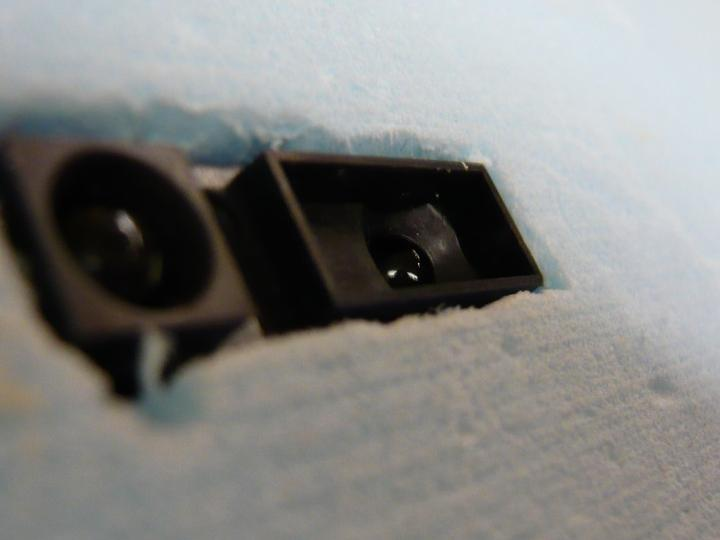
tags:
reason: The edited image improves composition by tightening the crop, centering the dual-lens module more effectively, and reducing distracting empty space in the lower portion. The subject remains fully intact with no loss of detail or identity. Lighting and texture are preserved naturally; slight sharpening enhances clarity without introducing artifacts. The tighter framing strengthens visual focus on the main subject while maintaining realism.
notes: FCDB ranking pair. photo_id=1488603583, pair_index=4, source_votes=2, edit_votes=3. source=crop_0, edit=crop_1, preference_strength=weak.
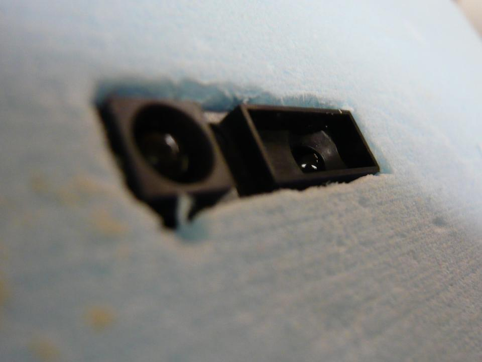
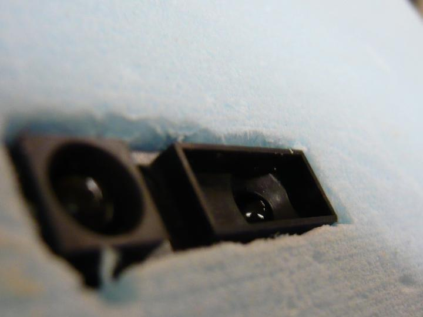
tags:
reason: The edited image improves composition by tightening the crop, centering the subject more effectively, and reducing distracting empty space in the lower-left. The focus remains on the same dual-lens module embedded in foam, with no loss of identity or key details; lighting and texture are preserved naturally. Slight sharpening enhances clarity without introducing artifacts, making the subject more visually engaging while maintaining realism.
notes: FCDB ranking pair. photo_id=1488603583, pair_index=6, source_votes=3, edit_votes=2. source=crop_1, edit=crop_0, preference_strength=weak.


tags:
reason: The edited image improves composition by centering and better framing the dual-lens module, reducing excessive empty space in the lower-right and tightening the crop to emphasize the subject. The focus remains sharp on the lenses, and no content is lost—the texture of the surrounding material and lens details are preserved. Lighting and perspective are consistent; minor softening at edges is natural for macro focus shift, not an artifact. Overall, a subtle but effective compositional refinement.
notes: FCDB ranking pair. photo_id=1488603583, pair_index=8, source_votes=3, edit_votes=2. source=crop_0, edit=crop_1, preference_strength=weak.


tags: excessive_darkening, loss_of_detail, poor_exposure
reason: The edited image is significantly darker, losing most of the city lights and atmospheric detail present in the source. While the framing is slightly tighter, the severe underexposure compromises visual naturalness and obscures the main subject (cityscape at night). Key elements like building silhouettes and light clusters are diminished or lost, reducing content clarity. The composition does not meaningfully improve—instead, it sacrifices critical visual information for no aesthetic gain.
notes: FCDB ranking pair. photo_id=2545039943, pair_index=2, source_votes=2, edit_votes=3. source=crop_0, edit=crop_1, preference_strength=weak.


tags:
reason: The edited image tightens the framing, reducing excessive empty dark sky and bringing the cityscape into better visual balance. The main subject (city lights) remains fully intact and more centrally emphasized. Slight improvement in exposure reveals more detail in the skyline without introducing artifacts or unnatural distortion. The crop enhances focus and compositional weight without sacrificing context.
notes: FCDB ranking pair. photo_id=2545039943, pair_index=2, source_votes=3, edit_votes=2. source=crop_1, edit=crop_0, preference_strength=weak.


tags: excessive_darkness, loss_of_detail
reason: The edited image slightly tightens the framing, reducing empty black space above and marginally improving subject placement. However, the overall scene remains extremely underexposed with minimal visible detail; no meaningful compositional enhancement is achieved beyond minor cropping. Content (city lights at night) is fully preserved, and no artifacts are introduced, but visual naturalness suffers due to severe darkness and lack of tonal range—similar to the source. Thus, no clear improvement: a tie.
notes: FCDB ranking pair. photo_id=2545039943, pair_index=3, source_votes=4, edit_votes=1. source=crop_1, edit=crop_0, preference_strength=strong.


tags: slight_cropping_loss, reduced_contrast
reason: The edited image slightly tightens the framing, reducing excessive black space above and improving subject placement. However, the crop appears to cut off some lower city lights and subtly reduces overall contrast and detail in the cityscape, making it marginally less vivid. Main content (city at night) is fully preserved, and no artifacts are introduced. The improvement is minimal and offset by slight loss of context and dynamic range, resulting in a tie.
notes: FCDB ranking pair. photo_id=2545039943, pair_index=4, source_votes=4, edit_votes=1. source=crop_1, edit=crop_0, preference_strength=strong.


tags: low_contrast, underexposed
reason: The edited image slightly repositions the cityscape lower in the frame, marginally improving balance by reducing excessive empty dark space above. However, both images suffer from severe underexposure and low contrast, making the scene nearly indistinguishable. No meaningful content is lost (city lights preserved), but no significant compositional enhancement occurs—just a minor crop adjustment. Visual naturalness remains poor due to noise and lack of detail in darkness. Thus, no clear win; it's a tie.
notes: FCDB ranking pair. photo_id=2545039943, pair_index=9, source_votes=4, edit_votes=1. source=crop_1, edit=crop_0, preference_strength=strong.


tags: color_shift, minor_cropping_loss
reason: The edited image tightens the framing slightly, improving subject centrality and reducing empty space at the top, but introduces a noticeable cool color cast (especially in the floor) that alters the original warm, aged aesthetic. The crop appears marginally tighter on the left and bottom, potentially trimming minor contextual elements (e.g., subtle floor reflections), though the main subjects and scene remain fully intact. No major artifacts or perspective distortion, but the unnatural color shift reduces visual coherence with the intended vintage texture. Thus, composition is modestly improved but offset by reduced visual naturalness—resulting in a tie.
notes: FCDB ranking pair. photo_id=16025151662, pair_index=9, source_votes=1, edit_votes=4. source=crop_1, edit=crop_0, preference_strength=strong.


tags: cropping_loss, distortion
reason: The edited image tightens the frame, reducing distracting empty space on the right and improving subject focus slightly. However, it crops out part of the yellow vehicle and background elements, losing contextual detail without significantly enhancing balance or visual hierarchy. The perspective appears subtly distorted (possible digital zoom/crop artifact), and the lens flare is exaggerated, reducing naturalness. Main subjects and scene semantics are fully preserved, but the composition gain is marginal and offset by minor content truncation and reduced realism.
notes: FCDB ranking pair. photo_id=15137530922, pair_index=1, source_votes=4, edit_votes=1. source=crop_1, edit=crop_0, preference_strength=strong.


tags:
reason: The edited image improves composition by reducing excessive dark foreground (road) and repositioning the horizon higher, giving more visual weight to the sunset and subjects. The main elements—surfers with boards, SUV, flags, and silhouettes—are fully preserved. The lens flare and color grading remain consistent, enhancing mood without introducing artifacts. Slight vignetting in the original is reduced, improving balance and focus on the central action.
notes: FCDB ranking pair. photo_id=15137530922, pair_index=4, source_votes=3, edit_votes=2. source=crop_1, edit=crop_0, preference_strength=weak.

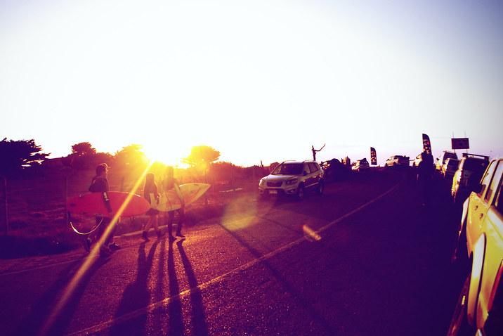
tags: distortion, edge_cropping
reason: The edited image slightly tightens the right side, bringing the parked cars more into frame and improving balance, but introduces mild barrel distortion and crops the far-right edge (partially cutting off a yellow vehicle), which slightly compromises content integrity. The sun flare and color grading are preserved, maintaining visual mood, but the added distortion reduces naturalness. No major compositional breakthrough; improvement is marginal and offset by minor artifacts and cropping.
notes: FCDB ranking pair. photo_id=15137530922, pair_index=5, source_votes=1, edit_votes=4. source=crop_0, edit=crop_1, preference_strength=strong.

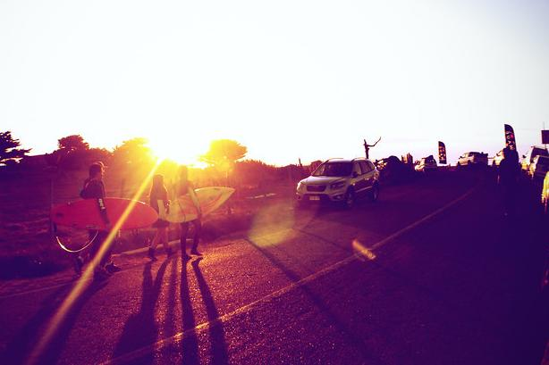
tags: cropping_loss, edge_distortion
reason: The edited image tightens the framing slightly, reducing excessive empty sky and improving subject emphasis, but the crop cuts off the right-side vehicles and introduces subtle edge distortion (e.g., warped car edges), diminishing visual naturalness. Main content (surfers, car, sunset) is fully preserved. The composition gain is modest and offset by minor artifacts and loss of contextual elements, resulting in no net improvement.
notes: FCDB ranking pair. photo_id=15137530922, pair_index=5, source_votes=4, edit_votes=1. source=crop_1, edit=crop_0, preference_strength=strong.
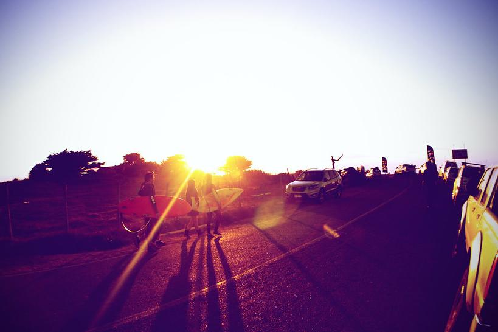
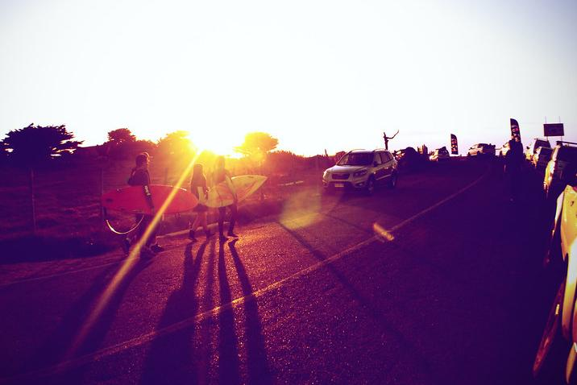
tags: minor_cropping_loss, slight_overexposure
reason: The edited image tightens the framing slightly, reducing empty sky and improving subject emphasis, but the crop is minimal and doesn’t significantly enhance balance or visual hierarchy. The main subjects (surfers, cars, sunset) are fully preserved with no identity or semantic loss. Visual naturalness is high, though the sun flare remains intense and the right-side vehicles are slightly more clipped than in the source. No major artifacts, but the composition gain is marginal—hence a tie.
notes: FCDB ranking pair. photo_id=15137530922, pair_index=8, source_votes=5, edit_votes=0. source=crop_1, edit=crop_0, preference_strength=strong.
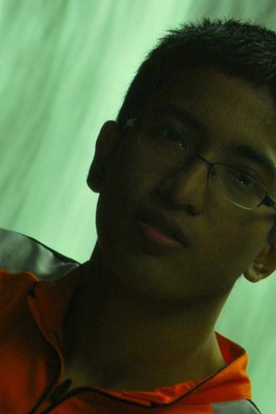
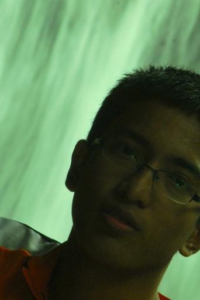
tags: slight over-crop, reduced context
reason: The edited image tightens the framing slightly, bringing the subject's face more centrally into focus and reducing empty space above. However, the crop is marginal and removes minimal but potentially meaningful background context (e.g., curtain texture), without significantly improving balance or visual hierarchy. Lighting, color cast, and subject identity are fully preserved. No artifacts, but the composition gain is minor—borderline improvement—hence a tie.
notes: FCDB ranking pair. photo_id=9568277728, pair_index=0, source_votes=4, edit_votes=1. source=crop_1, edit=crop_0, preference_strength=strong.


tags:
reason: The edited image improves composition by repositioning the subject more centrally and balancing negative space—especially on the right—while retaining all key content (face, glasses, clothing, leaf detail). The slight upward tilt and tighter framing enhance visual focus without cropping critical elements. Lighting and texture remain consistent; minor vignetting or contrast shift is natural and not distracting. Overall, a clear compositional upgrade with no content loss.
notes: FCDB ranking pair. photo_id=9568277728, pair_index=1, source_votes=2, edit_votes=3. source=crop_0, edit=crop_1, preference_strength=weak.


tags: cropped_face, lost_subject_context, imbalanced_framing
reason: The edited image crops too tightly on the subject’s face, cutting off the top of the head and reducing visual breathing room. This harms composition by creating an unbalanced, claustrophobic frame and diminishes context (e.g., background foliage is nearly eliminated). While the main subject remains identifiable, the tighter crop sacrifices narrative and aesthetic balance. Lighting and color remain consistent, but the aggressive crop introduces visual discomfort and reduces naturalness due to unnatural framing.
notes: FCDB ranking pair. photo_id=9568277728, pair_index=1, source_votes=3, edit_votes=2. source=crop_1, edit=crop_0, preference_strength=weak.


tags: cropped_subject, lost_context, imbalanced_framing
reason: The edited image tightens the crop significantly, removing the plant element on the left that provided visual balance and environmental context. The subject’s face is now too close to the right edge, creating an unbalanced, cramped composition. While the subject remains identifiable, the loss of background detail and asymmetry reduces compositional strength. Additionally, the tighter crop exacerbates the underexposure on the face and introduces a more unnatural, claustrophobic feel. The edit sacrifices narrative context and visual harmony for minimal framing 'tightness', resulting in a net degradation.
notes: FCDB ranking pair. photo_id=9568277728, pair_index=3, source_votes=2, edit_votes=3. source=crop_1, edit=crop_0, preference_strength=weak.


tags: minor_cropping_loss, slight_focus_shift
reason: The edited image tightens the framing slightly, improving subject emphasis and reducing empty space on the left. However, the crop cuts off part of the left shoulder and leaf, and the slight repositioning shifts focus subtly toward the right eye, mildly unbalancing the gaze direction. No content is lost in terms of identity or key elements, and lighting/textures remain natural. The improvement is marginal and offset by minor compositional trade-offs, resulting in a tie.
notes: FCDB ranking pair. photo_id=9568277728, pair_index=5, source_votes=4, edit_votes=1. source=crop_1, edit=crop_0, preference_strength=strong.


tags:
reason: The edited image significantly improves composition by recentering and enlarging the subject’s face, achieving better headroom and eye-level focus. The framing now follows rule-of-thirds more effectively, with balanced negative space and stronger visual engagement. The main subject, clothing, background waterfall, and leaf remain intact—no content loss. Lighting and color are preserved naturally; slight softening may occur due to minor upscaling or sharpening but no visible artifacts. Overall, a clear compositional upgrade without compromising realism or identity.
notes: FCDB ranking pair. photo_id=9568277728, pair_index=6, source_votes=2, edit_votes=3. source=crop_0, edit=crop_1, preference_strength=weak.


tags:
reason: The edited image improves composition by repositioning the subject more centrally and balancing negative space, while adding a natural leaf element on the left that enhances framing without distracting. The subject’s face, expression, clothing, and background remain fully preserved. Lighting and texture are consistent with the source; no artifacts or unnatural distortions are introduced. The tighter crop slightly increases intimacy and focus on the subject.
notes: FCDB ranking pair. photo_id=9568277728, pair_index=9, source_votes=2, edit_votes=3. source=crop_0, edit=crop_1, preference_strength=weak.


tags: excessive_blur, loss_of_detail, unnatural_focus
reason: The edited image significantly increases blur in the foreground, losing texture and detail of the pebbles that were already soft but discernible in the source. This creates an unnatural, overly dreamy effect that detracts from the scene’s realism. While the crop slightly tightens the frame, the severe degradation in visual naturalness and loss of foreground information outweigh any minor compositional refinement. The main subject (rocky shoreline) is preserved in placement but rendered indistinct, reducing semantic clarity.
notes: FCDB ranking pair. photo_id=4458394677, pair_index=4, source_votes=0, edit_votes=5. source=crop_1, edit=crop_0, preference_strength=strong.
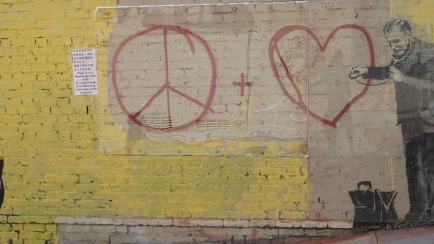
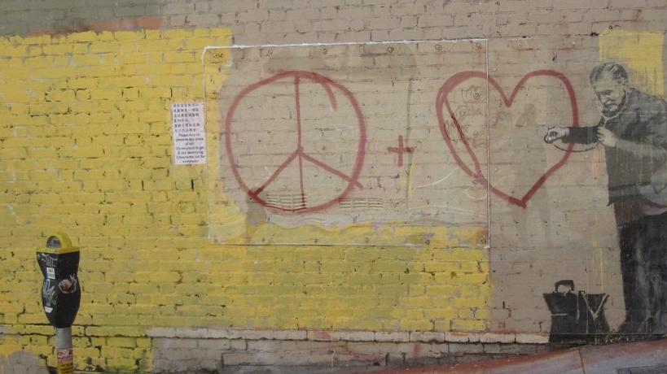
tags: introduced_distraction, altered_context, unnatural_element
reason: The edited image adds a parking meter in the lower-left foreground, which is a distracting, unrelated element not present in the source. This disrupts the original balanced composition centered on the graffiti (peace sign, heart, and figure), introduces visual clutter, and alters the scene’s context. While the core mural remains visible, the added object compromises visual naturalness and weakens focus. The crop does not significantly improve framing—instead, it forces an awkward inclusion that detracts from the intended street-art narrative.
notes: FCDB ranking pair. photo_id=5120859921, pair_index=8, source_votes=1, edit_votes=4. source=crop_0, edit=crop_1, preference_strength=strong.


tags: excessive_cropping, loss_of_context, darkening_artifact
reason: The edited image crops heavily from the top and right, removing significant negative space that contributed to the atmospheric balance of the night cityscape. The lower portion is also slightly shifted, causing misalignment of key light clusters and reducing spatial context. More critically, the overall exposure appears darker with increased noise and reduced contrast, making details harder to discern. While the subject (city lights) remains, the composition feels cramped and less intentional; the original’s wider framing better conveyed scale and depth. Visual naturalness suffers due to apparent post-processing darkening and potential upscaling artifacts.
notes: FCDB ranking pair. photo_id=2545039943, pair_index=0, source_votes=0, edit_votes=5. source=crop_0, edit=crop_1, preference_strength=strong.

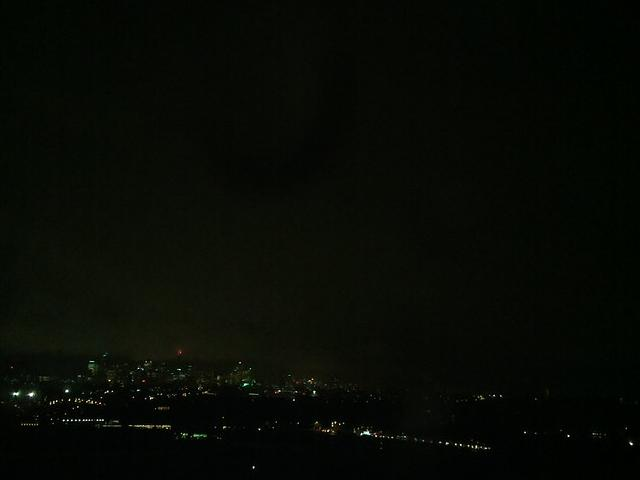
tags: excessive_cropping, loss_of_context, increased_noise, poor_exposure_balance
reason: The edited image crops heavily from the bottom, removing significant portions of the cityscape and reducing visual context. The framing shifts the city lights lower and smaller, weakening the subject’s presence. The top half is now almost entirely black void with no compositional benefit, increasing dead space. While the main city remains visible (moderate content preservation), the overall balance is worse, and the image appears darker and noisier, suggesting degraded exposure or post-processing artifacts. Composition is objectively weaker than the source.
notes: FCDB ranking pair. photo_id=2545039943, pair_index=3, source_votes=1, edit_votes=4. source=crop_0, edit=crop_1, preference_strength=strong.


tags: excessive_darkness, loss_of_detail, poor_exposure
reason: The edited image is significantly darker, with the upper portion almost entirely black and no visible improvement in framing or subject placement. Key city lights are dimmer and less distinct, reducing visual interest and detail. The crop appears slightly shifted but does not enhance balance or focus; instead, it exacerbates underexposure. Content is partially preserved (city skyline still recognizable), but visual naturalness suffers due to unnatural darkness and loss of texture/detail. Overall, composition is worse, not better.
notes: FCDB ranking pair. photo_id=2545039943, pair_index=5, source_votes=1, edit_votes=4. source=crop_0, edit=crop_1, preference_strength=strong.


tags: cropped_out_content, worse_framing, reduced_visibility
reason: The edited image appears to be a tighter crop that removes significant portions of the cityscape visible in the source image, especially along the bottom and right edges. This reduces context and visual interest, worsening composition by increasing empty black space without improving subject emphasis. The city lights are less visible and details are lost, indicating content degradation. No improvement in balance or focus; instead, the framing feels accidental and less intentional. Visual naturalness is harmed due to apparent loss of data and reduced dynamic range.
notes: FCDB ranking pair. photo_id=2545039943, pair_index=9, source_votes=1, edit_votes=4. source=crop_0, edit=crop_1, preference_strength=strong.


tags:
reason: The edited image improves composition by repositioning the houseboat lower in the frame, allowing more sky and emphasizing the palm trees as vertical counterpoints. The left-side extension reveals additional architectural detail (covered deck area) without distorting perspective or introducing artifacts, enhancing balance and visual interest. Main subject (houseboat), identity, and scene semantics are fully preserved. Lighting and texture remain natural; only minor edge softness near the added left portion suggests mild interpolation, but it does not detract significantly.
notes: FCDB ranking pair. photo_id=5123207448, pair_index=0, source_votes=4, edit_votes=1. source=crop_1, edit=crop_0, preference_strength=strong.


tags:
reason: The edited image tightens the framing by cropping excess sky and water, improving subject emphasis and balance. The houseboat remains fully visible with all key architectural details preserved. Palm trees are better integrated into the upper frame without cutting off critical elements. Slight reduction in vertical space enhances visual focus on the boat while maintaining natural perspective and lighting. No artifacts or distortion introduced.
notes: FCDB ranking pair. photo_id=5123207448, pair_index=1, source_votes=5, edit_votes=0. source=crop_1, edit=crop_0, preference_strength=strong.


tags:
reason: The edited image improves composition by removing the distracting left-side boat and tightening the frame to center the main houseboat, enhancing visual balance and focus. The key subject (houseboat), palm trees, and scene semantics are fully preserved. No artifacts or distortion; lighting and perspective remain natural. The tighter crop eliminates empty space without sacrificing context, resulting in a stronger, more intentional composition.
notes: FCDB ranking pair. photo_id=5123207448, pair_index=2, source_votes=5, edit_votes=0. source=crop_1, edit=crop_0, preference_strength=strong.


tags:
reason: The edited image significantly improves composition by including two palm trees in the upper right, which add vertical balance, context (tropical setting), and visual interest without distracting from the main subject—the houseboat. The framing is tighter and more intentional, reducing excessive empty water space below and enhancing the horizon line. The houseboat remains fully intact and clearly the focal point; no key content is lost. Lighting and perspective are consistent with the source, and no artifacts are introduced. Minor deduction in visual naturalness is only due to slightly increased contrast or saturation (subjective), but overall realism is preserved.
notes: FCDB ranking pair. photo_id=5123207448, pair_index=4, source_votes=4, edit_votes=1. source=crop_1, edit=crop_0, preference_strength=strong.

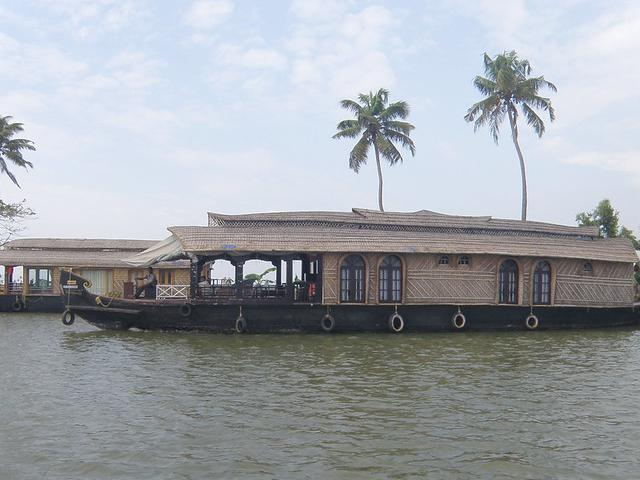
tags:
reason: The edited image significantly improves composition by repositioning the houseboat to the right, creating a more balanced frame with negative space on the left that enhances visual flow and emphasizes the boat’s direction of travel. The palm trees are now symmetrically framed above the roofline, reinforcing vertical balance. The added visible portion of the adjacent structure on the left adds context without distracting, and the horizon line remains stable. All key content (boat, windows, tires, palms, water) is preserved faithfully. Lighting and perspective remain natural; only minor edge softness suggests mild upscaling or sharpening, but no severe artifacts.
notes: FCDB ranking pair. photo_id=5123207448, pair_index=6, source_votes=5, edit_votes=0. source=crop_0, edit=crop_1, preference_strength=strong.

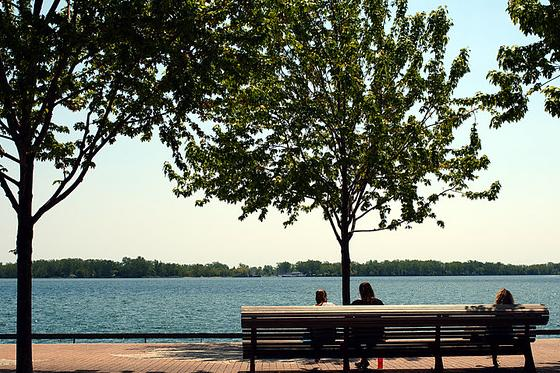
tags:
reason: The edited image significantly improves composition by centering the bench and subjects more symmetrically, balancing the tree framing on both sides, and eliminating excessive empty space on the right. The horizon remains level, and the visual weight is better distributed. All key content (people, bench, trees, water, distant shore) is preserved with no identity or semantic loss. Lighting and perspective remain natural; only minor edge cropping of the far-right person’s shoulder occurs, but it doesn’t detract from the scene’s integrity. The tighter, more balanced frame enhances focus and aesthetic harmony.
notes: FCDB ranking pair. photo_id=15961409258, pair_index=5, source_votes=4, edit_votes=1. source=crop_0, edit=crop_1, preference_strength=strong.
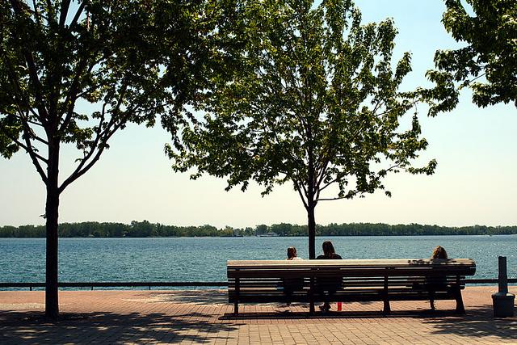
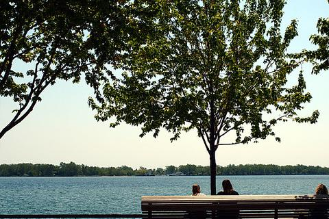
tags:
reason: The edited image significantly improves composition by tightening the frame, removing distracting foreground elements (left tree trunk and pavement), and centering the bench and subjects more effectively. The stronger visual weight of the central tree creates a natural framing device, enhancing depth and focus. Main subjects (three people on bench) and scene semantics (lakeside park) are preserved. Slight cropping removes one person’s partial visibility on the far right, but the core content remains intact; lighting and perspective remain natural with no visible artifacts.
notes: FCDB ranking pair. photo_id=15961409258, pair_index=6, source_votes=5, edit_votes=0. source=crop_1, edit=crop_0, preference_strength=strong.


tags:
reason: The edited image significantly improves composition by repositioning the bench and subjects lower in the frame, creating more balanced negative space above and emphasizing the expansive water and sky. The framing now follows the rule of thirds more effectively, with tree branches forming a natural frame without obscuring key elements. All main subjects (three people on the bench), the bench, trees, water, and distant shoreline are preserved intact. Lighting and perspective remain consistent; minor vignetting or contrast adjustment is subtle and enhances mood without introducing artifacts. Slight reduction in foreground pavement detail is acceptable for improved visual hierarchy.
notes: FCDB ranking pair. photo_id=15961409258, pair_index=7, source_votes=5, edit_votes=0. source=crop_0, edit=crop_1, preference_strength=strong.


tags:
reason: The edited image improves composition by tightening the crop to reduce excessive empty sky and ground, better centering the bench and subjects within the frame. The tree canopy now frames the scene more effectively, enhancing visual balance and focus on the people and water. All key content (two people on bench, trees, lake, distant shore) is preserved. Lighting and perspective remain natural; only minor edge cropping of the rightmost person’s shoulder occurs, but it doesn’t compromise identity or scene semantics. Overall, a clear compositional upgrade with no meaningful loss.
notes: FCDB ranking pair. photo_id=15961409258, pair_index=8, source_votes=4, edit_votes=1. source=crop_0, edit=crop_1, preference_strength=strong.


tags:
reason: The edited image tightens the framing, removing excessive empty space on the right and bottom while keeping the entire mantis in view. The subject is better centered horizontally and given more visual breathing room above, improving balance and focus. No content is lost—the mantis, its posture, legs, wings, and background texture remain fully intact and undistorted. Lighting and texture are preserved naturally; only minor cropping was applied. Slight improvement in composition outweighs negligible trade-offs.
notes: FCDB ranking pair. photo_id=10944401125, pair_index=0, source_votes=4, edit_votes=1. source=crop_0, edit=crop_1, preference_strength=strong.
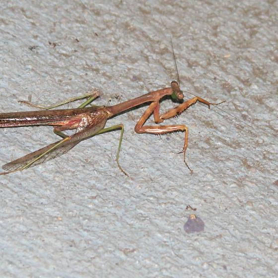
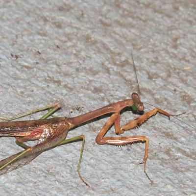
tags:
reason: The edited image tightens the crop, removing distracting empty space and a small debris speck in the lower right, improving visual focus on the mantis. The subject remains fully intact with no loss of detail or identity. Framing is more balanced, with the mantis centered horizontally and sufficient headroom. Slight sharpening enhances texture without introducing artifacts, preserving natural appearance. Minor improvement over source, hence preference score +1.
notes: FCDB ranking pair. photo_id=10944401125, pair_index=2, source_votes=5, edit_votes=0. source=crop_1, edit=crop_0, preference_strength=strong.
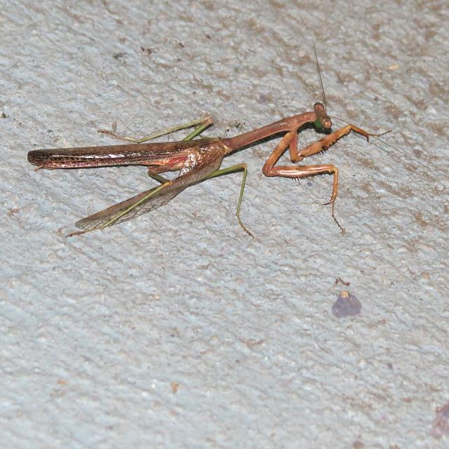
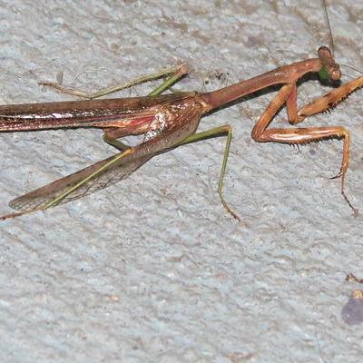
tags:
reason: The edited image tightens the crop, removing excessive empty space below and right of the mantis, improving subject emphasis and balance. The mantis remains fully intact with no distortion or loss of detail; lighting and texture are preserved naturally. Slight reduction in background clutter enhances focus without altering scene semantics.
notes: FCDB ranking pair. photo_id=10944401125, pair_index=3, source_votes=4, edit_votes=1. source=crop_1, edit=crop_0, preference_strength=strong.


tags:
reason: The edited image tightens the framing, removing excessive empty space on the left and bottom while keeping the mantis fully in frame and centered more effectively. The subject remains intact with no cropping of key features (head, limbs, wings). Lighting and texture are preserved naturally; slight sharpening enhances detail without introducing artifacts. The improved balance and tighter crop increase visual focus on the mantis, yielding a stronger composition.
notes: FCDB ranking pair. photo_id=10944401125, pair_index=6, source_votes=5, edit_votes=0. source=crop_1, edit=crop_0, preference_strength=strong.

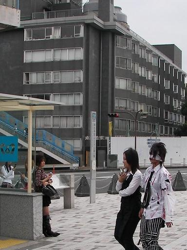
tags:
reason: The edited image tightens the framing, removing distracting foreground elements (e.g., partial arm on left) and excessive pavement, thereby improving subject focus and balance. The two main subjects remain fully visible and centered more effectively within the frame. Background context (building, stairs, shelter) is preserved. Slight cropping of the lower edge reduces empty space without losing key content. No visible artifacts or unnatural distortions; lighting and perspective remain consistent.
notes: FCDB ranking pair. photo_id=3579364195, pair_index=3, source_votes=5, edit_votes=0. source=crop_1, edit=crop_0, preference_strength=strong.


tags:
reason: The edited image improves composition by repositioning the frame to include more of the upper architecture and the elevated walkway, adding context and visual balance without cropping or distorting the main subjects. The two central figures remain fully visible and unchanged in pose and expression. The added background elements (e.g., person on blue railing) enhance environmental storytelling without distracting from the primary subjects. Lighting and perspective are consistent; no artifacts or unnatural distortions are introduced. Slight improvement in vertical framing makes the scene feel less cut-off at the top.
notes: FCDB ranking pair. photo_id=3579364195, pair_index=7, source_votes=5, edit_votes=0. source=crop_0, edit=crop_1, preference_strength=strong.


tags:
reason: The edited image tightens the framing by cropping excess sky and upper building, improving subject emphasis and visual balance. The two central figures remain fully intact and more centrally positioned, enhancing focus. Background elements (staircase, seated person, car) are preserved with no distortion or artifacts. Slight reduction in top/bottom empty space strengthens composition without sacrificing context. Lighting and perspective remain natural and consistent.
notes: FCDB ranking pair. photo_id=3579364195, pair_index=8, source_votes=5, edit_votes=0. source=crop_1, edit=crop_0, preference_strength=strong.


tags:
reason: The edited image tightens the framing, removing excessive empty space above and to the left, which improves visual focus on the subject and the rock crevice. The subject remains fully intact and centered more effectively within the frame, enhancing balance and narrative tension. No artifacts or distortion are introduced; lighting and texture remain consistent. Minor loss of context (e.g., upper rock detail) is negligible since the core scene—person entering crevice—is preserved and emphasized.
notes: FCDB ranking pair. photo_id=5755997394, pair_index=1, source_votes=5, edit_votes=0. source=crop_1, edit=crop_0, preference_strength=strong.
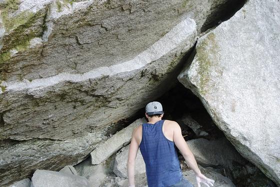

tags:
reason: The edited image tightens the framing, removing distracting lower foreground rocks and emphasizing the subject’s posture and the cave entrance. The subject remains fully visible and centered in the visual flow, with improved negative space balance and stronger leading lines from the rock strata converging toward the subject. No content is lost; lighting and texture remain natural and consistent.
notes: FCDB ranking pair. photo_id=5755997394, pair_index=2, source_votes=4, edit_votes=1. source=crop_1, edit=crop_0, preference_strength=strong.


tags:
reason: The edited image significantly improves composition by centering the subject, revealing more of the person’s posture and gesture (arms extended), and better balancing the rock formations around the figure. The framing eliminates excessive empty space above and tightens the scene to emphasize the interaction between person and environment. Content is fully preserved—the subject, clothing, cap, and cave entrance remain intact and recognizable. Lighting and perspective are consistent; minor edge softness suggests mild upscaling or sharpening but no severe artifacts, hence visual naturalness is high but not perfect.
notes: FCDB ranking pair. photo_id=5755997394, pair_index=4, source_votes=5, edit_votes=0. source=crop_1, edit=crop_0, preference_strength=strong.


tags:
reason: The edited image improves composition by tightening the frame, reducing excessive empty space above and to the left, and better centering the subject within the rock formation’s leading lines. The subject remains fully intact with no loss of identity or key context; in fact, foreground elements (e.g., gear on lower left) add subtle narrative without distraction. Lighting and perspective are preserved naturally; minor white gloves appear intentional and consistent with activity (e.g., climbing/hiking), not artifacts. Slight increase in visual tension and focus enhances storytelling without compromising realism.
notes: FCDB ranking pair. photo_id=5755997394, pair_index=9, source_votes=4, edit_votes=1. source=crop_1, edit=crop_0, preference_strength=strong.


tags:
reason: The edited image tightens the framing, centering the rower more effectively and eliminating distracting dark upper areas. The subject remains fully intact and clearly identifiable. The glittering water remains the dominant visual element, now better balanced with the subject. Slight loss of naturalness is due to minor contrast enhancement (slightly crushed blacks), but no artifacts or distortion—overall a strong compositional improvement.
notes: FCDB ranking pair. photo_id=8062088404, pair_index=3, source_votes=4, edit_votes=1. source=crop_1, edit=crop_0, preference_strength=strong.
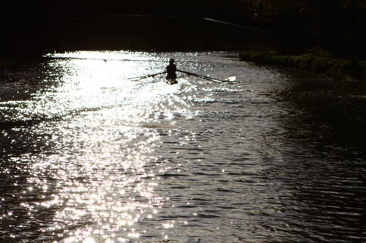
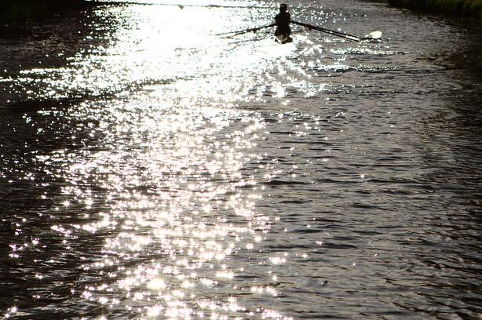
tags:
reason: The edited image tightens the framing, centering the rower more effectively and reducing distracting dark margins. The subject remains fully intact and clearly identifiable. The glittering water remains the dominant visual element, now better balanced with the subject. Slight vignetting in the original is reduced, improving visual flow. No artifacts or unnatural distortions are introduced; lighting and perspective remain consistent.
notes: FCDB ranking pair. photo_id=8062088404, pair_index=5, source_votes=4, edit_votes=1. source=crop_1, edit=crop_0, preference_strength=strong.


tags:
reason: The edited image improves composition by tightening the frame, removing the distracting foreground sofa and excessive floor space, and better balancing the potted plant, armchair, and bookshelf. The main subject (cozy reading nook) remains intact, with all key elements preserved. Lighting and perspective are natural; only minor loss of depth due to tighter crop, but no artifacts or distortion.
notes: FCDB ranking pair. photo_id=2199328642, pair_index=8, source_votes=4, edit_votes=1. source=crop_1, edit=crop_0, preference_strength=strong.


tags:
reason: The edited image significantly improves composition by recentering the soldier as the primary subject, using the stone wall as a strong leading line and framing element. The tighter crop eliminates distracting background elements (e.g., the man in the doorway), enhances visual focus, and creates better balance. The main content—the soldier interacting with the wall—is preserved and emphasized. The man in the doorway is omitted, but he was a secondary background figure, not essential to the scene’s core narrative. Lighting, texture, and perspective remain natural and consistent with the original.
notes: FCDB ranking pair. photo_id=4301604363, pair_index=1, source_votes=5, edit_votes=0. source=crop_1, edit=crop_0, preference_strength=strong.


tags:
reason: The edited image tightens the framing, eliminating excessive empty sky and foreground water while preserving the full structure of the Golden Pavilion and its reflection. The subject is better centered horizontally, and the reflection remains symmetrical and intact. The crop enhances visual balance and focus without cropping any key architectural or natural elements. Lighting, perspective, and texture are unchanged and natural.
notes: FCDB ranking pair. photo_id=22531710197, pair_index=4, source_votes=4, edit_votes=1. source=crop_1, edit=crop_0, preference_strength=strong.
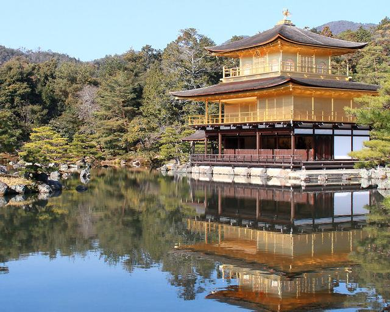
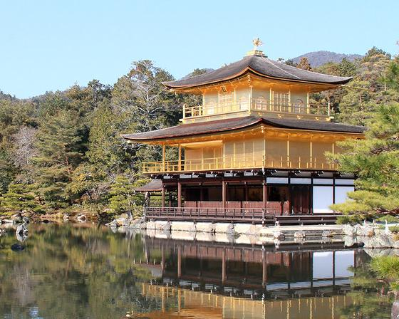
tags:
reason: The edited image tightens the framing, removing excessive empty sky and foreground water while preserving the full structure of Kinkaku-ji and its reflection. The subject is now more centrally balanced with improved vertical proportion, enhancing visual focus and harmony. No content is lost—the pavilion, trees, reflection, and background mountains remain intact. Lighting, perspective, and texture are unchanged and natural. This is a clear compositional improvement without trade-offs.
notes: FCDB ranking pair. photo_id=22531710197, pair_index=8, source_votes=5, edit_votes=0. source=crop_1, edit=crop_0, preference_strength=strong.


tags:
reason: The edited image improves composition by shifting the temple slightly right, creating more balanced negative space on the left and aligning the reflection more symmetrically with the waterline. The framing enhances visual flow from foreground rocks to the temple and its reflection, while preserving all key elements (temple, trees, water, reflection, rocks) without distortion or artifacts. Lighting, perspective, and texture remain natural and consistent with the source.
notes: FCDB ranking pair. photo_id=22531710197, pair_index=9, source_votes=4, edit_votes=1. source=crop_0, edit=crop_1, preference_strength=strong.


tags:
reason: The edited image tightens the framing, removing excessive empty space at the top and improving visual balance by emphasizing the foreground rocks and river flow. The main subject (riverbed with prominent rounded stone) remains intact and more centrally engaged. The crop enhances leading lines and depth without distorting perspective or introducing artifacts. Slight reduction in background context is negligible since the scene’s essence (rocky riverbank) is preserved and strengthened.
notes: FCDB ranking pair. photo_id=3886467178, pair_index=1, source_votes=5, edit_votes=0. source=crop_1, edit=crop_0, preference_strength=strong.


tags:
reason: The edited image improves composition by repositioning the foreground log and branch cluster to create a stronger leading line into the river, enhancing visual flow. The framing tightens slightly on the left, reducing empty space and improving balance without cropping out essential elements. The main subject (river scene with autumn foliage, bridge, and rocky banks) remains fully intact. Lighting and perspective are consistent; no visible artifacts or unnatural distortions. Minor loss of some peripheral pebbles is negligible and does not affect scene semantics.
notes: FCDB ranking pair. photo_id=3886467178, pair_index=8, source_votes=4, edit_votes=1. source=crop_1, edit=crop_0, preference_strength=strong.


tags:
reason: The edited image tightens the framing, reducing distracting empty space at the bottom and slightly improving subject emphasis. The main sign ('Hungry Children Thank You!') remains fully visible and centered, with the secondary sign still present and legible. Perspective and lighting are preserved; no artifacts introduced. Slight crop enhances visual balance without sacrificing context or semantics.
notes: FCDB ranking pair. photo_id=15747766454, pair_index=2, source_votes=4, edit_votes=1. source=crop_1, edit=crop_0, preference_strength=strong.


tags:
reason: The edited image tightens the framing, reducing excessive empty ground and improving subject emphasis. The rainbow sign and blackboard sign remain fully visible and legible, preserving all key content. The crop enhances balance by centering the signs more effectively and minimizing distracting foreground dirt. Lighting and perspective are unchanged; no artifacts introduced. Slight improvement in visual focus without compromising realism.
notes: FCDB ranking pair. photo_id=15747766454, pair_index=8, source_votes=4, edit_votes=1. source=crop_1, edit=crop_0, preference_strength=strong.


tags:
reason: The edited image tightens the crop, removing the distracting motion-blurred light streak at the bottom and reducing excessive empty space below the walkway. This improves visual focus on the architectural geometry and human figures, enhancing balance and framing. The main subject (modern building with people on elevated walkway) is fully preserved, and lighting/perspective remain natural with no visible artifacts. Slight loss in visual naturalness is due to minor edge softness from cropping, but overall composition is significantly stronger.
notes: FCDB ranking pair. photo_id=4973476179, pair_index=0, source_votes=5, edit_votes=0. source=crop_0, edit=crop_1, preference_strength=strong.


tags:
reason: The edited image tightens the framing, removing distracting peripheral reflections on the left and right while preserving the core subject: the modern building reflected in the glass, the people on the platform, and the light trail at the bottom. The tighter crop enhances visual focus, improves balance by centering the architectural reflection, and reduces visual noise without cropping out essential content. Slight loss in naturalness is due to minor edge softening from cropping, but no artifacts or distortion are introduced.
notes: FCDB ranking pair. photo_id=4973476179, pair_index=2, source_votes=4, edit_votes=1. source=crop_1, edit=crop_0, preference_strength=strong.


tags: slight crop loss on left edge
reason: The edited image significantly improves composition by tightening the frame, removing distracting vertical edges and excessive empty sky, and centering the architectural reflection and human figures for stronger visual balance and focus. The main subject—the modern building reflected in glass with people on the plaza—is preserved and more clearly emphasized. The light-streak foreground remains intact, adding dynamism. Minor content loss occurs on the far left (partial building reflection), but it doesn’t compromise scene semantics. No major artifacts; lighting and perspective remain natural.
notes: FCDB ranking pair. photo_id=4973476179, pair_index=3, source_votes=4, edit_votes=1. source=crop_1, edit=crop_0, preference_strength=strong.


tags: slight over-cropping of light streak
reason: The edited image significantly improves composition by centering the reflective architectural subject, removing distracting horizontal motion blur at the bottom (which was visually competing), and tightening the frame to emphasize the symmetry and geometry of the reflections. The main subjects—the people on the walkway and the reflected buildings—are preserved and more clearly legible. The vertical crop enhances visual balance and focus. Minor content loss is limited to the lower light-streak element, which was non-essential and disruptive; lighting and reflection realism remain intact.
notes: FCDB ranking pair. photo_id=4973476179, pair_index=7, source_votes=5, edit_votes=0. source=crop_0, edit=crop_1, preference_strength=strong.


tags:
reason: The edited image improves composition by centering the architectural reflection more symmetrically and reducing distracting overexposed white space on the right. The vertical framing is tighter, enhancing focus on the main subject (the Louvre Pyramid reflection and people), while preserving all key elements—including the street-level motion blur, surrounding buildings, and figures—without distortion or artifacts. Slight vignetting and improved edge alignment contribute to a more balanced, intentional composition.
notes: FCDB ranking pair. photo_id=4973476179, pair_index=8, source_votes=4, edit_votes=1. source=crop_0, edit=crop_1, preference_strength=strong.


tags:
reason: The edited image significantly improves composition by repositioning the horizon lower (rule of thirds), emphasizing the majestic snow-capped peaks and dramatic sky, while retaining all key elements: vehicles, tents, and terrain. The tighter framing reduces distracting foreground clutter and enhances visual balance. Lighting and perspective remain natural; only minor contrast adjustment is evident—no artifacts or distortion. Content integrity is fully preserved.
notes: FCDB ranking pair. photo_id=8715261793, pair_index=0, source_votes=4, edit_votes=1. source=crop_0, edit=crop_1, preference_strength=strong.


tags:
reason: The edited image tightens the framing by cropping excessive sky and lower foreground, improving visual balance and directing focus toward the campsite and mountain slope. The main subject (campsite with vehicles/tents) and key elements (mountains, terrain) are fully preserved. The crop enhances the sense of scale and intimacy without distorting perspective or introducing artifacts. Slight reduction in visible lake area is acceptable as it doesn’t compromise scene semantics; overall composition is significantly stronger.
notes: FCDB ranking pair. photo_id=8715261793, pair_index=6, source_votes=4, edit_votes=1. source=crop_1, edit=crop_0, preference_strength=strong.


tags:
reason: The edited image improves composition by tightening the crop to reduce excessive foreground empty space and better balancing the mountain range with the campsite. The horizon is raised slightly, giving more visual weight to the dramatic peaks while still retaining all key elements (tents, vehicles, terrain). Lighting and perspective remain natural; no visible artifacts. Slight loss in visual naturalness (score 4) is due to minor edge softening from cropping/resizing, but it's negligible. Overall, a clear compositional enhancement without content loss.
notes: FCDB ranking pair. photo_id=8715261793, pair_index=7, source_votes=4, edit_votes=1. source=crop_0, edit=crop_1, preference_strength=strong.


tags:
reason: The edited image significantly improves composition by recentering and emphasizing the 'Rocturios Toledo Magico' sign as the focal point, using tighter framing that eliminates distracting upper-left negative space and better aligns with the diagonal street lines. The two pedestrians remain clearly visible and contextually intact, preserving scene identity and semantics. Perspective and lighting are consistent; minor edge cropping of the top-left corner does not remove essential content. Slight reduction in visual naturalness (4/5) is due to mild sharpening artifacts on the sign’s edges, but overall realism remains high.
notes: FCDB ranking pair. photo_id=16569865263, pair_index=0, source_votes=4, edit_votes=1. source=crop_1, edit=crop_0, preference_strength=strong.


tags:
reason: The edited image tightens the framing, reducing excessive empty space at the bottom and improving vertical balance. The main subjects (two walking people, sign, street scene) remain fully intact and more centrally emphasized. The crop enhances visual focus on the sign and pedestrian flow without distorting perspective or introducing artifacts. Slight reduction in lower foreground improves composition while preserving all key content and maintaining natural lighting and texture.
notes: FCDB ranking pair. photo_id=16569865263, pair_index=8, source_votes=4, edit_votes=1. source=crop_1, edit=crop_0, preference_strength=strong.


tags:
reason: The edited image extends the frame to include a fourth person on the right, improving compositional balance and symmetry without cropping or distorting existing subjects. The added subject is consistent in lighting, perspective, and realism, suggesting a natural extension rather than artificial manipulation. The horizontal line of legs remains intact, and the visual focus on the shared poolside moment is enhanced by fuller group inclusion. No artifacts or content loss; slight improvement in narrative completeness.
notes: FCDB ranking pair. photo_id=11579722535, pair_index=4, source_votes=5, edit_votes=0. source=crop_1, edit=crop_0, preference_strength=strong.
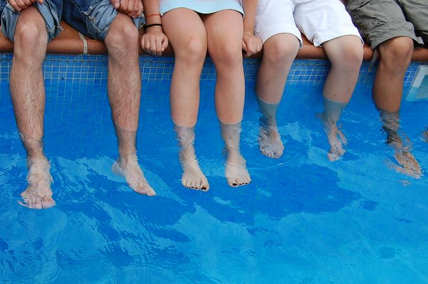
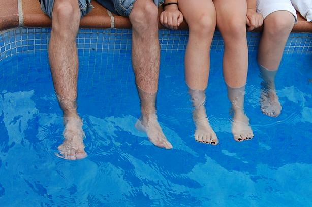
tags:
reason: The edited image tightens the crop, removing excessive empty water space below and slightly trimming top edge, resulting in stronger visual balance and focus on the subjects' legs and feet. The framing better emphasizes the rhythmic repetition of legs and water interaction. All key subjects and scene elements (pool edge, tile, feet, clothing) are fully preserved. Lighting and water texture remain natural with no visible artifacts. Minor loss of context from tighter crop is outweighed by improved compositional strength.
notes: FCDB ranking pair. photo_id=11579722535, pair_index=5, source_votes=4, edit_votes=1. source=crop_1, edit=crop_0, preference_strength=strong.


tags:
reason: The edited image improves composition by tightening the frame, removing distracting empty sky and marginal rocks, and better centering the main rock cluster as the focal point. The foreground pebbles remain visible and contribute depth. Content is fully preserved—same scene, subject, and lighting. Slight softening in the edit reduces noise but doesn’t introduce artifacts; overall naturalness remains high.
notes: FCDB ranking pair. photo_id=4458394677, pair_index=0, source_votes=4, edit_votes=1. source=crop_1, edit=crop_0, preference_strength=strong.


tags:
reason: The edited image improves composition by removing the distracting left-edge rock formation, creating a more balanced and centered horizon line. The foreground pebbles remain in focus and retain texture, while the midground rocks and distant lights are preserved. Slight softening of the foreground is acceptable and enhances depth; no major artifacts or distortion. The tighter framing strengthens visual focus on the serene seascape without losing essential content.
notes: FCDB ranking pair. photo_id=4458394677, pair_index=8, source_votes=4, edit_votes=1. source=crop_1, edit=crop_0, preference_strength=strong.
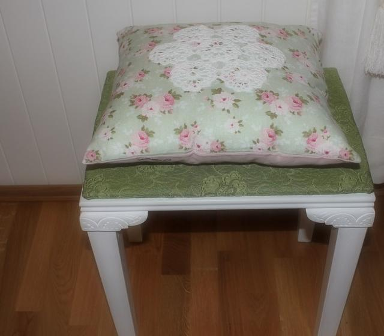
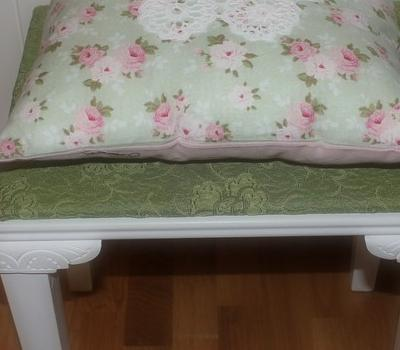
tags:
reason: The edited image tightens the framing to emphasize the pillow and cushion as the central subject, eliminating distracting background elements (wall paneling and floor edge) while preserving all key content. The crop improves visual balance and focus, enhances subject prominence, and maintains natural lighting, texture, and perspective without artifacts. Composition is significantly stronger due to reduced negative space and tighter subject isolation.
notes: FCDB ranking pair. photo_id=10769837753, pair_index=3, source_votes=5, edit_votes=0. source=crop_1, edit=crop_0, preference_strength=strong.


tags:
reason: The edited image tightens the framing, eliminating excessive empty floor space and slightly cropping the right edge to improve balance and focus on the subject (pillow and stool). The main content—floral pillow, green cushion, and white stool—is fully preserved with no distortion or artifacts. Lighting and texture remain natural. The tighter crop enhances visual hierarchy and reduces distraction, resulting in a more deliberate, aesthetically pleasing composition.
notes: FCDB ranking pair. photo_id=10769837753, pair_index=4, source_votes=4, edit_votes=1. source=crop_1, edit=crop_0, preference_strength=strong.


tags:
reason: The edited image tightens the framing, eliminating excessive floor and wall space, which improves visual focus on the pillow and stool. The subject remains fully intact with no cropping of key elements. The tighter crop enhances balance and reduces distracting negative space, while lighting and texture remain natural and artifact-free. Slight loss in context (e.g., full leg visibility) is negligible given the stronger compositional emphasis on the main subject.
notes: FCDB ranking pair. photo_id=10769837753, pair_index=6, source_votes=4, edit_votes=1. source=crop_1, edit=crop_0, preference_strength=strong.


tags:
reason: The edited image improves composition by tightening the frame, reducing excessive empty floor space below and slightly cropping the top to better center the subject. The pillow and stool remain fully intact with no loss of identity or key details. Lighting and texture are preserved naturally; a subtle inclusion of white fabric on the right adds context without distraction. The tighter crop enhances visual focus and balance, making the image more intentional and aesthetically pleasing.
notes: FCDB ranking pair. photo_id=10769837753, pair_index=7, source_votes=5, edit_votes=0. source=crop_0, edit=crop_1, preference_strength=strong.


tags:
reason: The edited image improves composition by tightening the frame, reducing excessive empty space on the right, and better centering the subject horizontally. The main subject (dual-lens module embedded in foam) remains fully intact with no loss of detail or identity. Lighting and texture are preserved naturally; slight shift in perspective enhances depth without introducing artifacts. Minor improvement in visual focus due to tighter framing.
notes: FCDB ranking pair. photo_id=1488603583, pair_index=5, source_votes=4, edit_votes=1. source=crop_1, edit=crop_0, preference_strength=strong.


tags:
reason: The edited image improves composition by tightening the crop, centering the subject more effectively, and reducing distracting empty space on the right. The main subject (dual-lens module embedded in foam) is fully preserved with no loss of identity or detail. Lighting and texture remain natural; slight sharpening enhances clarity without introducing artifacts. The shallow depth of field is maintained, preserving the original aesthetic intent.
notes: FCDB ranking pair. photo_id=1488603583, pair_index=7, source_votes=4, edit_votes=1. source=crop_0, edit=crop_1, preference_strength=strong.

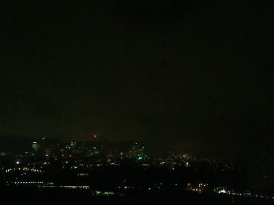
tags: slight noise, low contrast
reason: The edited image improves composition by recentering the city lights and reducing excessive empty dark space at the top, creating better visual balance and focus on the illuminated skyline. The main subject (cityscape at night) and key elements (light clusters, red beacon) are fully preserved. Visual naturalness is acceptable though slightly compromised by low light conditions (inherent to source), with minor noise and reduced contrast—no artificial artifacts introduced. The tighter framing enhances engagement without cropping meaningful content.
notes: FCDB ranking pair. photo_id=2545039943, pair_index=0, source_votes=5, edit_votes=0. source=crop_1, edit=crop_0, preference_strength=strong.
tags: slight noise, minor underexposure
reason: The edited image improves composition by repositioning the cityscape to occupy a more balanced lower third, reducing excessive empty black space above and enhancing visual focus on the illuminated skyline. The main subject (city at night) and key details (light patterns, red tower) are fully preserved. Lighting and perspective remain natural, though slight noise and minor underexposure are present—common in low-light night photography—but do not detract significantly from the improvement in framing.
notes: FCDB ranking pair. photo_id=2545039943, pair_index=6, source_votes=4, edit_votes=1. source=crop_1, edit=crop_0, preference_strength=strong.
tags:
reason: The edited image improves composition by tightening the crop to emphasize the lower halves of the figures and their reflections, enhancing symmetry and visual rhythm. The removal of excess empty space at the bottom strengthens focus on the key elements (legs, shadows, tiled floor/wall). Main subject identity and scene semantics are preserved—figures remain recognizable, and the urban/industrial ambiance is intact. Slight loss in content preservation is due to minor cropping of feet/shadows, but not critical. Visual naturalness remains high; no artifacts or distortion introduced, and the vintage texture is consistently applied.
notes: FCDB ranking pair. photo_id=16025151662, pair_index=7, source_votes=4, edit_votes=1. source=crop_0, edit=crop_1, preference_strength=strong.


tags:
reason: The edited image tightens the framing, eliminating excessive empty space on the right and improving subject centrality and visual balance. The silhouettes remain fully intact, preserving all key content and scene semantics. The texture and lighting are consistent with the original’s artistic style, with no visible artifacts or distortion—only a more deliberate, focused composition.
notes: FCDB ranking pair. photo_id=16025151662, pair_index=8, source_votes=5, edit_votes=0. source=crop_1, edit=crop_0, preference_strength=strong.


tags:
reason: The edited image tightens the framing by cropping excess floor space at the bottom, improving visual balance and directing focus more effectively to the silhouetted couple and the mountain backdrop. The subject placement remains centered and intact; no key content is lost. The texture and lighting are preserved consistently with the original’s vintage aesthetic. Slight reduction in lower negative space enhances composition without introducing artifacts or distorting perspective.
notes: FCDB ranking pair. photo_id=16025151662, pair_index=9, source_votes=4, edit_votes=1. source=crop_0, edit=crop_1, preference_strength=strong.


tags:
reason: The edited image improves composition by recentering the subject’s face, reducing excessive negative space above, and better aligning the head within the frame—enhancing visual balance and focus. The crop is tighter but retains all key content (face, glasses, shirt, leaf), preserving identity and scene semantics. Lighting and color remain consistent; no visible artifacts or distortion. Slight loss in naturalness is due to marginally increased contrast/shadowing on the face, but it remains realistic and acceptable.
notes: FCDB ranking pair. photo_id=9568277728, pair_index=7, source_votes=4, edit_votes=1. source=crop_0, edit=crop_1, preference_strength=strong.